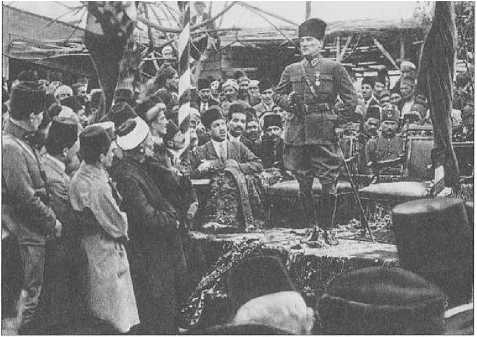

5
CUMHURİYETE GİDEN YOL
Saltanatın Kaldırılmasına Dair Notlar...
1 KASIM 1922’de TBMM saltanatı ilga etti. Bu önemli karar, son padişah Vahideddin’e tebliğ edildi; bundan sonra erşed ve eslah -yani ilmen ve ahlaken en üstün bir hanedan üyesi- halife seçilecek, ama bu Türkiye Devleti’ne istinad edecekti. Halife olmak hanedandan birinin hakkıydı, fakat iktidar devletin elindeydi. Saltanat ilga edildikten sonra VI. Mehmed Vahideddin İstanbul’da hanedanın en ahlaklı ve ilmi en derin adamı olarak kendisinin halife seçilmesini beklemedi! Son padişah hakikaten hâzineden hiçbir şey almadan -ki Avrupa bankalarında da parası yoktu ve buna rağmen yapacağı bir şey yoktu- İngilizlerin Malaya zırhlısıyla Avrupa’ya sığınmak zorunda kaldı. Sıkıntılı ve kısa bir dönem sonra da vefat etti. Kuzeni ve aynı zamanda da dünürü, Sultan Abdülaziz’in oğlu Abdülmecid Efendi Büyük Millet Meclisi Hükûmeti’ne ve Anadolu Hareketi’ne karşı sempatisi olan bir hanedan üyesiydi ve halife seçildi. Maalesef son halife bu konumunu muhafaza edemedi. Anadolu ile olan ilişkileri ve hassas dengeleri koruyamadı. Sonunda 1924’ün Martı’nda hilafet ilga edildi ve hanedanın üyeleri yurt dışına çıkarıldı. Burada dikkatimizi çeken olay; 9 Nisan’da kendisini fesheden meclisin yerine artık daha mutedil ve bundan sonraki değişikliklere daha yatkın bir meclis teşkil edilmiştir. Temmuz’da yapılan seçimlerle, Ağustos 1923’te bu meclis toplanmıştır. TBMM’nin ilk işlerinden birisi, 10 ay kadar büyük diplomatik çekişmelerle devam eden ve nihayet 24 Temmuz 1923’te imzalanan Lozan Antlaşması’nı meclis olarak tasdik etmektir.
Saltanatın kaldırılmasına karşı olanlar vardı kuşkusuz. Osmanoğulları hanedanı altı asırlık bir monarşiyi yaşadı. Türkler monarşist değildir, ki bir bugün monarşist partimiz de yoktur, ama Türkler monarklarını severler, Türklerin çok büyük çoğunluğu bilhassa ilk dokuz padişahı, büyük mareşaller diye severler ve son devirde Abdülhamid’i ilave edenler de vardır.
Monarşiyi sevmeyenleri, toptan mahkûm ederek konuşanları pek ciddiye almazlar. Bu tip yazarların çok kuvvetli tarihçiler ve ikna ediciler olduğu söylenemez. Fatih Sultan Mehmed’in, Kanuni Sultan Süleyman’ın, I. ve II. Murad’ların oluşturduğu bir hanedan ve tarihî akış için, “padişah da hareme kapanırmış” diye bir değerlendirme yapamayız. Çünkü Topkapı Sarayı’nı yaptıran adamlar, dört nesil o sarayda, yatağında ölmedi. Ama şu da var ki, saltanat kalktıktan sonra da cumhuriyete karşı monarşiyi ileri çıkaranlar görülmedi. Hanedan dahi mukadderatına boyun eğdi ve gülünç tepkiler, açık karşı örgütlenmelerde bulunmadı.
Saltanat kaldırılmasaydı eğer, bence bir süre devam eder ve bütün kurumlar gibi dejenere olurdu. Tehdit olarak görüldüğünü de tam belgeli olarak bilemeyiz ama bir tehdit ihtimali vardı. Cumhuriyet’e karşı memnuniyetsiz gruplar vardı ve monarşiyi kullanmalarından korkuldu. Bu ne kadar muhtemeldi, bilinmez ama bir rahatsızlık yarattı. Mesela son halife Abdülmecid Efendi dahi, padişahmış gibi ilginç ve gereksiz davranışlar içindeydi. Lüzumsuz abartılı Cuma selamlık alayları tertipledi, bir selamlıkta Fatih Sultan Mehmed kılığında at üstündeydi ve çok tepki çekti. Şunu söyleyelim, bu deli davranışı değil; hükümdarlar bu kılığa girer. Mesela Rusya’da II. Nikola ve Çariçe, 15.-16. asır kılığında taç töreni yaptılar. Franz Joseph ve Elizabeth Macar krallarının kılığında Macar tacı giydiler. Son İran şehinşahı dahi 1971 başında 2500. yıl törenlerinde Şahbanu Farah ile birlikte tacı ve kıyafetiyle birlikte âdeta stilize bir Sasani hükümdar çifti rolündeydiler ama onlar hükümdardı. İstanbul veAnkara’da ise gayr-ı memnun zümrelerin bu gibi hareketler ve gösteriler etrafında toplanmasından ciddi olarak korkuldu. Sırf o değil, böyle iddiaları ileri sürmeyecek kadar makul olan üyeler de dâhil, hanedana mensub herkes sürüldü. Tabii bu sadece bizde olan bir şey değildir, dünyada da böyle olmuştur. Hanedanlar sürülmüş, hatta Rusya’da katledilmiştir. Bizde de yeni rejim istisnasız kan bağı olan bütün hanedan üyelerini sürgüne gönderdi. Kan bağı olmayan aile üyeleri (yani şehzadeler, sultan eşleri ve sultan hanımların çocukları) bir istisna olabilirdi fakat bu durumdakilerden kendileri sürgün bu kafilesine katılanlar ekseriyetteydi.
Hilafet Nasıl Kaldırıldı?
19. yüzyılda İslam hilafeti, müessese olarak, bütün tarihi içindeki en ilginç görünümdedir. Daha ilk İslami yüzyılda hilafet müessesesi bir çatışma, hizip doğuran bir kurumdu ve Endülüs Emevileri’nden beri iki ve giderek 15.-16. yüzyıllarda, birden çok İslam hükümdarı hilafet iddiasında idi. Haksız da değillerdi; çünkü Müslüman toplumları yönetiyorlardı. 19. yüzyılda hilafetin artık bir tek devlette, yani Osmanlı’da olduğu daha yaygın biçimde kabul görüyordu. İran Şiileri Osmanlı hilafetini kabul etmeseler de artık eskisi gibi şiddetli bir karşı propaganda yoktu. Hind’de Seyyid Ahmed Han’ın hilafet konusundaki olumsuz görüşleri veya Arap dünyasında hilafetin Kureyş ve Arap soyuna ait olmasını savunan bazı yeni görüşler dahi, aynı coğrafyada şiddetli bir muhalefetle karşılanmaktaydı. (Aslında koloni Müslümanları daha Osmanlıcı idi.) Ama diğer yandan hilafet kurumunu, 19. yüzyılın kolonyalist dünyasının siyasi yapılanmaları ve rejimlerine uygun bir biçimde düzenlemek isteyen İslamcı modernist görüşler de ortaya çıkmaktaydı. Buna örnek olarak, Sünusileri (Seyyid Mehmed el Mehdi) veya Cemaleddin Afgani gibilerini görmek gerekir.
İşte 19. yüzyılda Osmanlı sultanlarının, özellikle II. Abdülhamid’in bütün bu farklı yorumların bazılarını destekleyerek bazılarıyla da mücadele ederek, kendine göre bir yönlendirme gayreti içinde olduğu görülmektedir. Ayrıca bu dönemde, Osmanlı çevrelerinde ortaya çıkan Türk merkezli bir Panislamizm’in varlığına da dikkat çekmek durumundayız. Nihayet imparatorluğun başkenti, yeni bir İslami eğitim düzenlemesine sahne oluyordu ki bu konu pek az incelenmiştir ve biz de maalesef burada fazla teferruatlı olarak değinemeyeceğiz.
Osmanlı medrese modernleşmesindeki amaç, El Ezher ve Kazan medreselerinin ayarında ve daha mükemmel bir eğitimle ideolojik kontrolü sağlamaktır. II. Abdülhamid halife olarak bu kurumun onurunu içeride ve dışarıda korumak ve politikasına uygun bir görünüm yaratmak zorundaydı. Kısaca, 19. yüzyılda Osmanlı İmparatorluğu, hilafet müessesesine her zamankinden fazla önem veriyordu.
Savaşlarla Sarsılan Otorite
Birinci Dünya Savaşı’na girilmesindeki garip şartlar hem hilafet kurumunun kendisini hem de Türk halkının hilafet kurumuna bakışını sarsmıştır. Yabancı bir askerî-siyasi heyetin nüfuzu altında olan İttihat Terakki yöneticilerinin ülkeyi savaşa sokması, orduyu yabancı kumandanların stratejisi doğrultusunda nasıl tüketmişse, bu şartlarda “Halife-Sultan’ın sancak- ı şerifle cihad ilan etmesi de hilafet kurumunun otoritesini sarsmıştır. Birinci Dünya Savaşı’nda her iki taraftaki Müslüman askerlerin durumu yeni yeni inceleniyor. Bazı halde İtilaf Devletleri’nin Müslüman askerlerini kitle halinde teslim almaları, esir kamplarına düşen ve büyük sıkıntıya maruz kalan askerlerimize Müslüman karşı taraf askerinin yardım etmesi, Rusya ordusundan Müslüman askerlerin Türk tarafına veya müttefik Avusturya saflarına firarı gibi olaylar hilafet makamının “cihad” çağrısı dışında, Müslümanların doğal geleneksel davranışlarıdır.
Ama her iki tarafta da Müslümanların birbirlerine karşı savaştığı gerçektir.
Halife’yi Meclis Seçiyor
23 Nisan 1920’de Büyük Millet Meclisi Ankara’da toplandığı anda, telaffuz edilmiyorsa dahi, hilafetin ve saltanatın mahiyet değiştireceği hissediliyordu. Ancak hilafet kurumu birçok mebusun zihinlerinde ve gönüllerinde, saltanatla aynı şekilde mütalaa edilmiyordu. Hilafetin kaldırılmasıyla biten bu dönem, Millî Mücadele’yi yürüten kadrolar arasında bile derin görüş ayrılıklarına, gerilime, idari kanundan elenme ve hatta yurt dışına ilticalara neden oldu. Saltanat lağvedilince Meclis, 18 Kasım 1922’de Veliaht Abdülmecid Efendi’yi sadece halife olarak seçti. 1300 yıl içinde ilk defa, bütün milleti temsil eden bir şûra halifeyi seçiyordu. Bu âdeta İslam’ın ilk yüzyılında Haricilerin önerdiği sistemin garip ve değişik şartlar altında gerçekleşmesiydi. Bu halifenin siyasi iktidarı yoktu ve ömrü uzun olmayacaktı. Mısır Ezher uleması ve Hind Müslümanları Hilafet Komitesi, bu seçimi onayladıklarını bildirdiler. Ayrıca Kırım’dan gelen bir heyet, “Rusya Müslümanları Kongresi adına” da “Cuma Namazı hutbesi için” halifeye müracaat etti, yani onu tanıdı.-63
İktidar-Hilafet İlişkileri
Şüphesiz siyasi iktidara sahip olmayan ve iktidar araçlarını kullanmayan bir halifenin durumu, 1924 Şubat ve Mart aylarından çok önce tartışılmaya başlanmıştı. Hilafetin muhafazasını isteyenler bile, Ankara’daki iktidarla İstanbul’daki hilafet arasındaki ilişkilerin geleceğini kesin bir biçimde tarif edemiyorlardı. Hatırlanacağı üzere tarihteki örnek, Abbasi halifelerinin son zamanları ve Memlûk hanedanıyla Mısır’da olan ilişkilerinin durumuydu. Ama bu örnek, saltanatın kaldırılmasından sonra Osmanlı hanedanı ve yeni Cumhuriyet arasındaki ilişkileri ayarlamak için bir örnek olamazdı. Diğer yandan hilafet kurumu dış dünyada, özellikle Hind Müslümanları açısından şimdi başka türlü bir önem kazanmıştı. Hatta bu kurum tarihte görülmeyen bir nitelemeye ve yeni bir karaktere kavuşturulmak isteniyordu. “Hilafet-i İslamiye" kavramı burada tartışmaya açılmıştı. Halifenin tahta çıkışı bir hükümdarınkinden farklıydı. Eyûb Sultan Camii’nde kılıç kuşanma (yani bir nevi taç giyme) töreni yapılmadı. Halife seleflerinin sarayında ikamet ediyordu. Cuma selamlığı törenleriyse yapılıyordu. Bu cuma selamlıkları az zamanda çeşitli yorumlara ve Halife Abdülmecid’in saltanatı özlediği dedikodularının çıkmasına neden oldu. Doğrusu, Halifenin de durumu değerlendiren uyumlu bir politika izlediğini söylemek mümkün değildi.
Ankara’daki hükûmetin hilafeti, saltanatın bir uzantısı olarak gördüğü ve iktidara tam sahip olmak için, bu kurumu kaldırmak istediği o günden bugüne, literatürde ve siyasi mahfillerde hep tartışılmış, ileri sürülmüştür. Bizzat İslamcı hareket ve düşünce ile alakası olmayan siyasetbilimci tarihçiler, mesela Mete Tunçay da bu görüşü ileri sürmüşlerdir. Fakat Kemalist iktidarın hilafeti, laik cemiyet kurulması için kaldırıldığını ileri süren bir siyasi söylem de çoğunlukla destekleniyor. 1923 yılında, Seyyid Bey’in Hilafetin Mahiyet-i Şeriyyesi adlı risalesi, hilafet kurumunun İslam itikadıyla bağlantısı olmadığını savunur; “Hilafet dinî değil, dünyevî ve siyasi bir kurumdur" der. Daha sonra kanunun Meclis’te müzakeresi sırasında Adliye Vekili olan bu İslam âlimi (aynı zamanda İzmir Mebusu), bir yıl evvel kaleme aldığı risaleye dayanarak hilafetin ilgası gereğini muhaliflere karşı savunmuştur. Hükûmet bu konuda kararlıydı (sonradan Seyyid Bey’in Meclis zabıtlarındaki konuşması bir ayrı basım olarak yeniden basıldı^644). Cumhuriyet rejimi, hilafeti siyasi iktidardan koparmıştı ve şimdi bu siyasi iktidarsızlık nedeniyle (aslında teoriye uygun olarak) hilafeti ilga ve hanedanı yurt dışına sürme hazırlığındaydı.
Radikal Reformlar Dönemi
Hilafete karşı siyasal söylemin (rhetorique) en çarpıcı örneği, Cumhurbaşkanı Gazi Mustafa Kemal’in (Atatürk) 2 Mart 1924’te Meclis’e irad ettiği nutukta görülür. Mustafa Kemal Türkiye’de tedrisatın birleştirilmesinden (yani dinî eğitimin kaldırılması ve yabancı okulların Maarif Vekâleti gözetiminde millî okullarla program uyumu sağlamasından) ve aile hukukunda ve vatandaş hukukunda medenî yolun (yani Kanun-ı Medeni’nin, Droit Civil’in) getirileceğinden söz ediyordu. 1926’daki hukuk reformu gündeme gelmiş ve iki yıl önceden ilan edilmiş demektir. Hilafetin kaldırılmasını takip eden zaman içinde dinî eğitim kurumları kapatıldı, İslami tarikatlar dağıtıldı, tekkeler kapatıldı ve kıyafet kanunu çıkarıldı. Bu olayla, muhtemelen kültürel ve laik bir değişim birbirine bağlanmış olarak bir radikal reform dönemine girildi.
Hilafet ve Hz. Peygamber
İslam’da hilafet meselesi tartışmalı mevzulardan biridir. Hilafet Kur’an’da iki yerde geçmekte ve buralarda da Hz. Davut ve Hz. Adem’e, yani insana izafe edilmektedir. Çünkü Allah adını zikretmek ve buna müdrik olmak yaratıklar içerisinde insanoğluna mahsustur. Yoksa, “Biz hilafeti Kureyş’e verdik" ya da “Biz hilafetin babadan oğula olmasını istedik" gibi bir ifade yoktur. Tabii bu, hadisler için de geçerlidir. Çünkü netice itibariyle söz konusu olan kişi bir peygamberdir, söylediklerinin ilahi mebdei olduğuna inanılır, bir devlet adamı değildir. Bu şekilde söyleseydi, insanlar birbirlerine girerlerdi. Toplumun bir şekilde idare edilmesi gerekir. İslam cemaatinde bu idareyi yapan kişiye “halife" denir. Onun için hilafetle idare farklı şeyler değildir, yani ruhaniyet yoktur. Onun ortaya çıkması, ruhanî bir kurum gibi telakki edilmesi bütün İslam asırları boyunca söz konusu değildir. Hilafetin ruhanî bir kurum olması 18. asırda Küçük
Kaynarca Antlaşması ile olmuştur. Biz değil onlar ileri sürüp belirtmiştir. Hatta Mouradgea d’Ohsson’a da bu görüş Osmanlı elitine de pek uygun geldiği için telkin edilmiştir.
Mustafa Kemal Paşa ve Latife Hanım Afyon Belediye binasına kadar açık faytonla mahşerî kalabalık eşliğinde ilerlerken.
Din ve Siyasetin Merkezindeki Makam: Hilafet
Hilafetin avdeti mümkün değildir, kırılmış kristal gibidir, yerine gelmez. Zaten hilafeti lağvettiğimiz vakit manzara şudur; Rusya Müslümanlarının bu müesseseyi tutması artık söz konusu değildir. Zira artık Sovyetler Birliği vardı. 1924 yılında artık o dünyanın, buradaki hilafetle veya herhangi başka bir müessese ile bağı olamazdı. Hindistan Müslümanları vardı. Dünyanın en kalabalık Müslüman nüfusudur, bunun üzerinde dururuz. Hind Müslümanları için Britanya kolonyal idaresine karşı Osmanlı hilafeti, halifesi bir mazeret ve bir dayanma noktasıydı. “Halife bunu istemez dine mugayirdir, yok halife şunu ister, yapmalıyız” gibi bir referans, tartışmaları destekleyen bir güç noktasıydı. O yüzden Hind Müslümanları pek hoşlanmadı bu makamın kalkmasından. Fakat nihayet Hindistan kendi yolunu bulduktan sonra -ki bu çok kısa bir süredir- zaten hilafetin orada da pek işe yaramayacağı açıktır. Arap dünyasındaysa 19. asırdan beri kimse zaten Türk’ün hilafetine taraftar değildi. Yani dikkat edin, Arabistan 19. asırda bağımsızlık istemiyor. Ama Türk halife de istemiyor. “Hilafet bizim hakkımızdır, Kureyş’in hakkıdır” diyorlar.
1924 Meclisi’nde Hilafetin lağvı fikri hakimdi. Değindiğimiz gibi birinci safhada Adliye Vekili Seyyid Bey bir risale çıkardı. Bu risalede hilafetin devlet işlerinden ayrılması konusunda bir öneride bulunuluyor. Yani bu, 1922’deki ayrım için uygun bir temeldir. İkinci safha, yine aynı kişi tarafından benzer bir risalede devlet otoritesinden ayrılmış hilafetin ruhanî olarak pek işe yaramayacağı konusundadır. Birincisinde tarihî bir argüman kullanılıyor, Abbasi Devletinin bilhassa Büveyhiler ve ardından Selçukiler devrinde Bağdat Hilafeti’nin devletten ayrı otorite olduğu ve âdeta ruhaniyet kazandığı, ikincisindeyse bunun İslam devletinde devlet anlayışı açısından mümkün olmadığı belirtiliyor. Bir yıl içinde aynı kişi tarafından serd edilmesi dışında ikisi de mantık olarak geçerlidir ve ikisi de aslında akideye fazla bağlı bir dayanak değildir. Çünkü İslam dininde halifeden sadece Kur’an’da peygamberlerle birlikte söz edilir. Hilafet sisteminin nasıl olacağı konusunda fazla bir bilgi yoktur, olmaması da mantıkî ve hayırlıdır. Ondan sonraki tarihî verilere ve olaylara bakarak görüşün iki kere temellendirilmesi çok ilginçtir. Bunu yukarıda değindiğimiz gibi, eski Adliye Vekili Seyyid Bey yapıyor. Literatürde insanlar bu iki risalenin farkında değiller. İlk defa olarak bunu Mete Tunçay’da gördüm.-62
Hiç şüphesiz ki hilafet için Mısır’ın dahi teşebbüsü olmuştur, katiyyen hıdive, hele Fuat’a böyle bir makamı kimse yakıştıramazdı. İran için böyle bir şey söz konusu değildi. O zamanki Müslüman devletleri Britanya’nın protektorası, kuvvetli nüfuzu altındaki Ürdün, Irak cephesinde, yani Haşimîlerin böyle bir makamı yüklenmesi belki söz konusu olabilirdi ama devlet olarak yapıları müsait değildi ve kimse bunları tanımazdı ki en başta Suudîlerin bile red edeceği açıktı.
Dolasıyla hilafet kaldırılırken gerekçesinde söylendiği gibi, Büyük Millet Meclisi’nin uhdesinde, mündemiç bir müessese olarak kaldı. Tabii bu müesseseyi bugün görmüyoruz. 1924’te ani bir kararla bu müessese kaldırıldı. Bizzat halife ve sülalenin erkeklerinin, yakın erkek üyelerin birkaç gün içinde sürülmesiyle sonuçlandı. İstasyon olarak dikkati çekmemesi için Sirkeci garı kullanılmadı ve Çatalca İstasyonu’ndan vagona bindiler. Fakat öbürleri için birkaç hafta daha müsaade verildi. Osmanlı hanedanının, damatlar da dâhil olmak üzere, şehzade ve sultan unvanını taşıyan bütün üyeleri birlikte çıktı. Sonradan affedilenler oldu. Damatlık bağı kalmayanlarsa kaldılar. Kan bağı olmadığı için şehzade ve sultan analarından kalanlar oldu. Bir de kalabilecekleri halde istekleriyle hanım sultanlar da sürgüne katıldı. Hanedanın kadın üyelerinin sonradan dönüşleri 1952 yılında, 30 yıl bile geçmeden mümkün olmuştur. Erkekler ancak 1974 affıyla, yani artık hepsinin dönemeyeceği kadar uzak bir tarihte geri dönme hakkını alabildiler ve zor bir 50 sene geçirdiler. Paraları yoktu ve devletin verdiği para sınırlıydı. Çünkü pasaport tek yönlüydü ve geri dönüş mümkün değildi. Fransa hepsine nezarette bulundu. Prenses ve prens olarak onlara yeni diplomatik pasaportlar verdi. Bazı yerlerde daha çok sıkıntı yaşadılar. Fakat Balkan ülkelerinden başlayarak Orta Avrupa, Fransa, yavaş yavaş İngiltere ve Amerika’ya kadar her yere yayıldılar.
Geçen 50 senenin sonunda Osmanlı hanedanının manzarası şu: Birçok hanedan gibi hayat şartlarında büyük terfi göstermemişlerdir. Nasıl ki Avusturya hanedanında sadece son veliaht Otto (şaşılacak derecede Türk dostudur ve bizim hanedan üyeleriyle de çok yakın dostluğu vardı) Almanya sayesinde Avrupa Parlamentosu’na girmişti, gerileri kayda değer mevkilere gelemedi ve Hohenzollern ve Çar hanedanından kalanlar için de bu böyledir. Hatta aile riyaseti kime kalacak diye birbirlerine düştüler. Bugün bile Romanovlardan iki aday arasında bir ihtilaf vardır. Osmanlı hanedanı da çok büyük varlık gösteremedi. Bununla birlikte bir-iki kişi mali vaziyetini düzeltti. Çok iyi eğitim görenler vardı, bu bir artıdır ve eğitime önem verdiler. Hatta diyebiliriz ki kadın üyeler yurt dışında saltanat döneminde olmayacak kadar iyi eğitim gördüler. Neslişah Sultan, Şehzade Osman Ertuğrul Efendi gibi Avrupa’da oldukça entelektüel kişiler olarak görülenler vardı. Fakat çok fakir kalanları, eğitim alamayanları da oldu, bilhassa Orta Doğu’dakiler. Hanedan üyeleri hiçbir zaman devlet aleyhinde siyasi hareketler, örgütlenmeler göstermediler ve Cumhuriyet aleyhinde açık konuşmadılar. Lehte değerlendirmeleri vardır.
Aşağı yukarı ilk anda Hind Müslümanları, belki Endonezyalılar da kısmen bu işe burulmalarına rağmen ortada o kadar farklı akımlar vardı ki, mesela daha önce de İsmailî mezhebi Türk hilafetine çok muarız bir tutumla bakmasına rağmen, bundan sonra tamamıyla alakasız kalmıştır. Sayıca az olmakla birlikte coğrafya bakımından çok yaygın olan İslam dünyasında, para ve eğitim bakımından çok üstün durumda olan İsmailîlerden destekleyici ama itici bir ses de çıkmamış ve yardım da gelmemiştir. Hindistan kıtası gibi kalabalık Müslümanların yaşadığı yerde ilk andaki burukluk zamanla Müslüman Hindistan mevhumunun ortaya çıkması ile tavsamıştır. Bunun öncülerinden biri de Halide Edip (Adıvar) Hanım’dır. Kendisi burayı terk ettikten sonra muhaceret zamanında hayatının bir kısmı Aligarh Islamic College gibi yerlerde geçti ve Hind Müslümanları kendilerini çok tuttu. O havanın içerisinde Nehru, Mevlâna Azad gibi isimlerle de görüştü ve öyle çok militan bir tavrı yoktu. Fakat 1937 yılında inside India adında bir kitabı çıktı.-66 Bir Türk münevverinin prestijli bir yayınevinde, (Weidenfeld & Nicolson’da) basılan ilk kitabıdır ve çok okunmuştur. Hindistan’da halen klasiktir. Burada Hindistan alt kıtasındaki Müslümanların yaşam ve kültür bakımından ayrı bir millet ve kültür olduğunu ispat ediyor, görüşü ve yorumu bu ve çok tutuldu. Onun için bu yavaş yavaş ilerleyen tertiplenmeyle Hindistan kendi içinde kişiliğini buldu ve bir de bağımsızlıktan sonra artık tartışılmaz oldu. Bu bakımdan ben Türk hilafetinin lağvının büyük bir sıkıntı yarattığı kanısında değilim. Aksine görüşler tabii çok fazla var. Kaldı ki hilafetin adı lekelenerek, saldırılarak kaldırılmış değildir; Türkiye Büyük Millet Meclisi böyle demektedir. Şunu da unutmamak lazım, halifeyi tarihte ilk defa milletin seçtiği farz edilen bir organ seçiyor ve hal ediyor ki bu önemlidir.
Şimdi mesela Türkiye’nin elinde hilafet olsa ne olurdu? Bana göre İslam dünyası üzerinde Türkiye’nin bugün ne kadar etkisi varsa yine o kadar olurdu, fazlası olmazdı. Çünkü İslam’da hilafet var ve Kur’an’da geçiyor, ancak, insanın vasfı olarak geçiyor. İnsan Allah’ın halifesidir, O’nun adını zikreder, O’nun kuvvetine inanır, O’na biat eder. İkincisi, hilafetin ne Kur’an’da ne vahiyde ne de peygamberimizin hadislerinde tarifi ve sistematiği, düzenlenişi geçiyor. Bu bir zaaf değil, aslında tam anlamıyla vahye mahsus bir mükemmelliktir. Şöyle olacak, böyle olacak, yok seçimle tespit gibi keyfiyet ve ahkâm yok. Hilafetin İslam’da ruhanî bir kurum olmadığı çok açıktır. Bir dünyevî kurumdur. İslam dünyasında zaman zaman iki hilafet olmuştur. Emevîler devrinde İspanya fethedildi, İspanya merkezden koptu ve Şam’daki halifenin öbür tarafında, Endülüs’te de bir halife vardı. Osmanlı devrinde burada vardı, Memlûklerde vardı, Orta Asya’da vardı. 11. asırda Şiiler’de de vardı.
Bizde ilginç nokta, Yavuz Sultan Selim Han’ın hilafeti alıp getirdiği gibi bir nakil hikâyesinin varlığıdır ki doğru değildir. İkincisi, bu hilafet unvanını Fatih de, Bayezid de kullanıyor veya onların adına sınır valileri kullanıyor. Üçüncüsü, Kanuni ve Yavuz da dâhil olmak üzere, bunlar bu unvanı az kullanmışlardır. Hâlbuki 19. asırda Sultan Abdülaziz veya Abdülmecid ve diğerleri için “zıllullahi fi’l-arz” (Allah’ın yeryüzündeki gölgesi) gibi unvanlar kullanılıyordu. 1876 Anayasası’nda halife unvanı resmen yer almıştır. Ancak ondan evvel de vardır. Hilafet terimi, III. Selim için de geçiyor, 1774’ten (Küçük Kaynarca Antlaşması’ndan) beri bütün vesikalarda geçiyor.
Osmanlı’daki son halife Abdülmecid’in hayatına ve yaşam biçimine baktığınız zaman, mutaassıbların halife modeline uymuyor. Halifenin kendisi yaşam biçimi ve anlayış itibariyle tamamıyla laik ortamda yürüyen, çok bilgili bir prens olan, Fransızcası, Almancası olan, zaman zaman Potsdam’daki askerî akademide okuyan oğlundan bile daha açık bir Osmanlı. Mayosunu giyiyor, yüzüyor, spor yapıyor, resim yapıyor, besteleri var. Fakat tabii en azından Avrupa şeklindeki, düzeyindeki muhafazakâr bir burjuvanın hayatı var.
Osmanlı sarayını temsil ediyor, zıtlık yok, umumî ahlak ilkelerine, ciddiyet ilkelerine uyuyor ve hatta bazı hanedan üyesi gençleri bazı yaşam biçimleri konusunda sık sık uyarıyor ki aile reisi olarak ve halife olarak bu yetkisi var. Bütün o dönemin mülteci hanedan azası kendisinden kesinlikle halife diye bahsederler. Onun mülteci halife statüsünün üzerinde durulur.
Gelgelelim son halife kendi aile bireylerinin dahi söylediği gibi fevkalade dikkatsizdi. Müsrif olmamakla beraber bütçesiyle yetinemiyor ve sık sık Ankara Hükûmeti’nden malî bakımdan destek ve daha fazla bütçe istiyor ve gürültü ile Cuma selamlığı yapıyordu.
Üstelik yanında da Refet Paşa vardı. İstiklâl Savaşı kumandanlarının arasında ister istemez böyle bir hafif gerilim olacaktı. Refet Paşa, Ankara’ya göre daha geleneksel görüşlüdür.
Mareşal Gazi Mustafa Kemal Paşa, Millî Müdafaa Vekili
Refet (Bele) Paşa ile birlikte, Ankara, 4 Aralık 1921.
Farzımuhal, “Kurtuluş Savaşı kazanıldıktan, Ankara’da Türkiye Büyük Millet Meclisi kurulduktan ve geçiş dönemi boyunca ve Cumhuriyet ilan edildikten sonra Abdülmecid Efendi İstanbul’da soğukkanlı biçimde otursaydı, hiç gösteri yapmasaydı hilafet kalır mıydı?" diye soralım. Gerçi kendisinin Ankara hareketine sempatisi olduğu biliniyordu, ama hilafet bir gün yine lağvedilirdi, lâkin daha sonra olurdu ve muhtemelen Osmanlı hanedanı da bu kadar sıkıntılı bir şekilde dışarılara çıkmazdı.
Sürgün, bu olay yüzünden çok ani olmuş ve hanedan üyeleri çok mağdur olmuşlardır. Kanun çok sert çıkmış, uygulamada bazı aksaklıklar olmuş, hiç istenmeyen sonuçlar yaşanmıştır. Bütün bunlar olmazdı ve muhtemelen daha yumuşak bir geçiş olabilirdi. Bununla beraber hilafetin ilgası mukadderdi ve Osmanlı hanedanının sürgünü Birinci Dünya Savaşı’ndan sonraki taht ve taçların yıkımı içinde en acımasız olan değildir, hatta ölçülü bir yol izlemiştir.
Fakir Bir Ülkenin İzmir’deki İktisat Kongresi
1923’te toplanan İzmir İktisat Kongresi çiftçi ve tüccar grupların istekleri doğrultusunda kararlarla dağıldı. Kongreyi Türkiye için amir kararlar alan bir organ olmaktan çok, dış dünyaya yeni Türkiye’nin ekonomik ve toplumsal sistemini ilan eden bir kongre olarak değerlendirmek doğru olur. Kongre bürokratik bir istişare mahiyetindedir. Alınan kararla, “İktisat üzerinde kim söz söyleyebilecekse o gelsin" gibi bir hava vardır. Kongre iktisadi hayatın geliştirilmesi için bir dizi kararla kapatılmıştır. İlk günden bellidir ki yeni devlet iktisadi hayatı düzenleme cihetine gidecektir. Demir yollarına el atılacaktır, mevcut şirketler devletleştirilecektir. Bunlara karşı ileri sürülen en önemli mazeret (o yıllarda) Türklerin demir yollarını işletemeyecekleri üslubunda idi.
Devlet aslında liberal bir rejimde görülmediği ölçüde iktisadi hayatı kontrol altında tutuyordu. Büyük bir kitlenin alıcısı olduğu şeker, tütün, ucuz Amerikan bezi vs. gibi en mübrem maddeler üzerinde tamamen devlet tekeli kurulmuştu. Avrupa’da bile bir müddet sonra başlayacak olan ulaştırma, posta ve şehrin altyapı hizmetlerini millileştirme sürecine Türkiye daha baştan el atmıştır. Devlet bir dizi ağır sanayi atılımına bu dönemde girdi. Zira buna bir ideoloji değil, “Pera Palas’ı bile açık artırma ile alıp işletecek" yerli iş adamının olmaması gibi bir olay sebeb olmuştu.
İktisat Kongresi, iktisadi hayatın her sektörünün, hatta işletme ve bürokratik mekanizmanın altyapısının bile tartışıldığı bir alan oldu. Mesela harflerin Latinleştirilmesi ve okuma yazma sorununun böyle çözümleneceğini ileri sürenlere karşı Kâzım Karabekir Paşa karşı çıkmıştı. Azerbaycan’daki bu Latinleştirme işinin yürümediğini ve âdeta bir karmaşaya dönüştüğünü ifade etti.
Lozan Üzerine Birkaç Söz
Lozan Barış Antlaşması, Türkiye Devleti’nin hem sınır hem müesseseler hem de hayatı bakımından kuruluşunu tayin eden çok önemli bir antlaşmadır. Hâlâ üzerinde zafer mi, hezimet mi diye kavgalar devam ediyor. En doğru sözü tarihçiler söylüyor: Lozan bir uzlaşmadır.
Yeni Türkiye hukukunu kabul ettirmiştir. Birinci Dünya Savaşı’nın yenik devletleri içinde kendine dikte edilen Paris Antlaşmaları dizisinden Sevr’i kabul etmeyen -bunu aslında Osmanlı Hükûmeti de kabul etmemiştir, çünkü meclis yoktu- Anadolu Hükümeti kendi şartlarını dikte ederek kabul ettirmiş ve büyük bir uzlaşma sağlamıştır. Meclis Hükümeti 1923’te ilk Lozan oturumunu reddetmiştir. Curzon ve İsmet Paşa arasındaki münakaşa da ilginçtir. Bu dönemde ikisinin arasındaki en önemli atışma, Curzon’un bazen Mondros Mütarekesi’ne atıfta bulunmasından ileri gelmiştir. İsmet Paşa da “Ben buraya Mudanya’dan geldim” diyerek cevap verir.
Lozan: Zafer mi, Hezimet mi?
Lozan’ı bir hezimet olarak görenler de bir zafer olarak nitelendirenler de mevcuttur. Bize Lozan’da hiçbir şey verilmedi, biz kendimiz aldık. Harbden yeni çıkmış bir millet olarak, meşum antlaşma, Sevr’i kabul etmedik. Lozan mantıkî ve gayet onurlu bir uzlaşmadır. Nitekim kalıcı ve düzeni sağlayıcı bir antlaşma olarak görülmelidir.
Lozan Antlaşması, Cumhuriyet ilan edilmeden evvelki geçiş döneminde gerçekleşen ve kabul edilen bir kurucu belgedir. Bu çok ilginç bir noktadır; bundan dolayı Lozan’a bütün bir Cumhuriyet dönemi bürokrasisi ve politikacıları “Cumhuriyet’in temel antlaşması, hatta temelidir" derler. Bu abartma şuna dayanıyor: Lozan’ın ahkâmına baktığımız zaman, gerçekten bir imparatorluğun tasfiyesi de, yeni gelen rejimin iç meselesi de beynelmilel bir antlaşmayla yerine oturtulmuştur. Bu özelliğinden dolayı Lozan’a muhalif çevreler, “Bu antlaşma tamamen dışarının yönettiği bir hezimet" diye yorum yaparlar. Aslında Lozan bir uzlaşmadır, yani hem muhalif devletlerle bir antlaşmadır hem de Türk halkıyla kurulacak yeni rejim için bir antlaşma sayılır. Şüphesiz bu antlaşmanın üzerinde önemle durulması gerekiyor.
1922 yılı Kasım ayının ortalarında son padişah ülkeyi terk etti. Yine aynı ayın başında TBMM saltanatı kaldırma kararı almıştı. Peki, TBMM ne yapıyor? Yeni bir rejim mi ilan ediyor? Şimdilik hayır. “Cumhuriyet herhalde kapıdadır" deniliyor ama Cumhuriyet henüz ilan edilmemiştir. Bu arada Mudanya Mütarekesi’nde fiilen sona eren İstiklâl Savaşı’nı hukuken nihayete erdirecek yeni bir statüye girilmiştir. Burada saltanat ortada yok; yani imparatorluk tasfiye edilmiştir. Lozan’ın ilk safhası 20 Kasım 1922 ile 4 Şubat 1923 tarihleri arasındadır. Hiç şüphesiz Lozan Konferansı’nın bu ilk döneminde en mühim mesele, sanıldığının aksine sınırların tespiti keyfiyeti değildir. Çünkü burada Türkiye ile Yunanistan arasındaki sınır sorunları çözümlenmiş, hatta esas itibariyle kabul edilmişti. Yine İngiltere, Fransa, İtalya ve yeni
Türkiye arasında yüzyıllardan beri biriken sorunların çözümleri iki bölüm halinde ele alınmıştır. Bunlar katiyyen sınır meselesi değildir. Asıl sorun kapitülasyonlar ve iktisadi ilişkilerdir. Bu mevzulara gelindiğinde sorun bir türlü çözülemedi ve büyük bir çatışma ile İsmet Paşa başkanlığındaki delegasyonumuz Lozan’ı terk etti. 23 Nisan 1923’te ise yeniden konferans masasına oturuldu. Görüşmeler sonunda 24 Temmuz 1923’te bir antlaşma imzalandı. Asıl bundan sonraki safha çok önemliydi. Ortada 17 ek belgeyle birlikte beş bölüm, beş antlaşma, beş adet protokol ve beş bildiriyi içeren 143 maddelik bir Lozan Antlaşması vardı.
Uzun yıllar Türkiye Cumhuriyeti yönetimi, “Cumhuriyetimizin ve yeni toplumumuzun esası bu antlaşmadır” dediği halde, ne antlaşmanın zabıtları ne ön görüşme protokolleri ne de yorumları yayınlanmıştır. Elbette kasti bir tutum söz konusu değildir. Denilebilir ki kolay nutuk atmayı yeterli gören, özet metin ve yorumları kullanmaktan rahatsız olmayan bir anlayış hâkimdir. Hatta dışişleri mensubları için bile böyle bir zihniyet geçerliydi. Merhum Prof. Seha Meray’ın 1969-1973 arasında hazırladığı, zabıtları karıştırarak etüt ettiği ve metinleri ortaya koyduğu Lozan külliyatına^68 kadar da bu mesele pek halledilmiş değildi. İlmî literatürde bile - mesela, Siyasal Bilgiler Fakültesi yayını olan Olaylarla Türk Dış Politikasının, 1919-1973 arasını ele alan ilk cildindeki “ Lozan Antlaşması" maddesinin dahi ancak derli toplu bir yazı olmaktan fazla şey ifade etmediği söylenebilir.-*69 Oysa muhtelif baskıları olan bu kitaba yurt dışında bile Türk dış politikasının el kitabı olarak müracaat edilmiştir.
Burada antlaşmanın kendisine bakmakta fayda vardır. Bir kere barış antlaşmasına giden delegeler çok ilginçtir. Heyetin başında İsmet Paşa, heyetin içinde Rıza Nur var. Rıza Nur’un yanında sonraki başvekillerimizden Hasan Saka Bey, sonra ilginç bir üye olarak imparatorluğun son hahambaşılarından Hayim Nahum vardır. Bir de burada dikkat edilmesi gereken husus Büyük
Millet Meclisi’nde iki düşünce arasında çok şiddetli tartışmaların vuku bulmasıdır. Dolayısıyla Lozan metni üzerinde tek kişinin, tek kuvvetin direktifi bulunduğu iddiasını biraz ihtiyatla karşılamak gerekir.
On İki Ada’yı Hiç Alamadık!
Sınırlar aslında Mudanya Mütarekesi’ne göre tespit edilmiştir. Vakıa biz Mudanya’da bu sınırların hepsini alamadık ama alacağımız yer belliydi, daha doğrusu elde o askerî güç vardı. Dolayısıyla Sevr’de Çatalca hattından biraz ileride bulunan Podima (Yalıköy)-Kalikratya
(Mimarsinan) hattı -ki bunlar bugün İstanbul’un banliyösüdür neredeyse- Lozan’da artık değişecektir. Londra Konferansı’nın sonunda, Mart 1921’de yapılan barış teklifinde bölge ve çizgi söz konusu edilmemektedir. Sakarya Zaferi’nden ve Fransa ile Ankara Antlaşması’nın ardından yapılan Mart 1922 tarihli barış teklifinde ise, Babaeski ve Kırklareli Yunanistan’da kalacakken değişmiştir. Meriç hattı, yani Birinci Dünya Savaşı’na girerken söz konusu olan Osmanlı İmparatorluğu hattı esas addedilmiştir. Adalar bütünüyle gene Balkan Savaşı’ndan sonraki statüde, Türkiye dışında (ikisi hariç) kaldı. Ege’nin kuzey adaları Yunanistan’ın elindedir. On İki Ada ise İkinci Dünya Savaşı’nın sonunu bekleyecek ve neticede hiçbiri bize verilmeyecektir; vermek isteyen Nazi Almanyası’dır ki bunu kabul etmek Müttefikler ve Sovyetlerle karşı karşıya gelmek olurdu. Dolayısıyla Alman hediyesini reddeden İsmet Paşa dış politikasını tenkit etmek doğru değildir. Suriye sınırında Antakya (Hatay) elimizden çıkmıştı, İskenderun sancağı ise duruyordu. Durumu belirsizdi, bir protektoraydı ve 1939’da Türkiye’ye dönecekti. Irak sınırına gelecek olursak; Lozan’da Musul meselesi halledilmemiş, çözümü sonraya bırakılmıştı. Bu “sonra’nın zamanı hiç gelmeyecektir. Boğazlar bölgesi beynelmilel bir kontrol altındadır ve askerden arındırılmış bir bölgedir. Statü yine aynı şekildedir, fakat bu 1936’da Montreux’de tasfiye edilecektir. Boğazlar meselesi İkinci Dünya Savaşı’nda Türkiye’yi meşgul edecektir. Fakat ondan sonra askerden arındırma meselesi söz konusu olmayacaktır. Hepimizin bildiği gibi Lozan’dan sonraki dönemde İstanbul’un işgal kuvvetlerinden arındırılması söz konusudur. Fakat aslında İstanbul’un statüsü Lozan’a bile kalmamış ve söz konusu da olmamıştır.
Gazi Mustafa Kemal Paşa çocukları selamlıyor, Tuzla-İstanbul, 5 Haziran 1928.
Vatandaşlık Meselesi ve Mübadele
Adlî kapitülasyonlar tamamıyla ikinci dönemde halledilmiştir; vatandaşlığını değiştirmek isteyen gayr-ı müslim unsurlara hiçbir şekilde müdahale edilmeyecekti. Buna karşılık hemen Lozan’ın ardından gelen mübadele -ki Lozan hükümlerinde yer almamıştır- tamamen Yunanistan’ın aynı günlerde büyük devletlerle anlaşarak yaptığı talebin (baskı da diyebiliriz) sonucudur ve yeni Türkiye devleti bunu kabule zorlanmıştır. Bütün Anadolu’daki Helen nüfus mübadeleye tabi tutulmuştur. Bunların içinde sayıları 100 bini geçen -ki çok önemli bir rakamdır- Karamanlı Rumlar dediğimiz Hıristiyan Türkler de yer almaktadır. Bu Cumhuriyet’in o ânı ve geleceği için çok olumsuz bir yaptırımdır. Bunlar da Yunanistan’a gönderilmiştir ve bilhassa bu Karamanlı toplum orada çok büyük sıkıntılar çekerek yaşamak zorunda kalmıştır. Fakat İstanbul, Bozcaada ve İmroz Rumları, tıpkı Batı Trakya Türkleri gibi, etabli, meskûn (established) statüsünde ele alınarak kapsam dışında bırakılmışlardır. (Bu iş halledilmiş midir? Hayır. 1960’tan sonra da bunların içinde Yunan tebaası olanlar Yunanistan’a gönderildiler. Bu durum aile parçalanmasını başlattı ve hatta bir kuşak evveli de gitmek zorunda kalıyordu. İstanbul bu devirde bir anda hızlı bir de-Helenizasyon’a uğramıştır.) Sevr’deki askerî sınırlandırma Lozan’da artık söz konusu olmayacaktır. Lozan’a göre, Boğazların iki yakasında askerden arındırılmış bir bölge vardır, onun dışında Türkiye çevrede 12 bin asker bulundurabilme hakkını elde etmiştir.
Türk-Yunan Nüfus Mübadelesi
Türk-Yunan nüfus mübadelesi Lozan’da etraflıca tartışılmamıştı. Ama bu konferansta gündeme geldi ve işleme geçilmesine karar verildi. Dolayısıyla Lozan’ın sonuçlarından birisi de orada tarif edilmeyen mübadeledir. Çok ciddi bir sayıya ulaşan nüfus karşılıklı olarak yer değiştirmiştir. Bu nedenle mübadele bahsine bilhassa değinmek gerekir.
İmparatorluklardan geriye bir miras kalır. Miras, günlük dilimizde de vardır. Mesela Türkiye Türkçesindeki pek çok kelime... Bir binaya baktığımda ilk anda aklıma gelen kelimelerden bazılarını söyleyeyim: Anahtar, kilit, temel... Bunlar Rumcadır. Azerbaycan’da “anahtar" diye bir kelime yoktur; “açkı" derler, “bağlamak" derler. Yine mesela “çatı" ise Farsçadır. Mesela, “Yalının fenerini poyrazda yaktım" diye bir cümle kurduğumuzda orada sadece yakmak Türkçedir. Yalı, fener ve poyraz, üçü de Rumcadır. Farsça ve Arapça kelimeler bizim edebiyatımızda çokça yer alırlar, lisanımızda yer alırlar, ama lisanımız Türkçedir. Çünkü imparatorluğun kadim bazı müesseseleri var ve bunları biz de aynıyla tevarüs etmişiz; bunları reddetmek toplumu kültürel izmihlale (khaos) ve çürümeye götürür.
Modern Balkan ülkelerinin bazı mirası reddetmek gibi ciddi bir sosyo-kültürel arızası var. Bu, Orta Doğu’ya da bulaşmıştır. Oysaki imparatorluk tarihi bir millî tarih gibi okunamaz.
Biz çok büyük bir deprem geçirdik. Depremin adı, Birinci Dünya Savaşı’dır. Bu harbin en mühim sonuçlarından birisi ise mübadele olmuştur. Bu mübadelenin, her şer olayda olduğu gibi hayırlı tarafları da olmuştur. Ama bu nüfus değişimi genel itibariyle büyük bir dramdır, yaradır ve kapanmaz.
Türkiye’nin işgali girişimine karşı biz önce Atatürk’ün liderliğinde bir Millî Mücadele gerçekleştirdik. Sonra ise bir Mudanya Mütarekesi yaptık. Bu mütarekeye göre Balkan sınırlarımız aynen 1912-13 Uşi/Londra Antlaşmaları gibi kabul edildi. Şimdi bazı bilgisiz kesimler diyor ki, “Lozan’da On İki Ada’yı vermişiz." On İki Ada Balkan Savaşı’nda zaten İtalyan işgali altındaydı. Lozan’da kimsenin oraları verdiği de yoktu. Nitekim kime ait olacağı İkinci
Dünya Savaşı sonunda belli oldu. Kuzey Ege Adaları ise Balkan Savaşları’nda zaten işgal edilmişti. Onlar Yunanistan’da kaldı. Yine bazıları diyor ki, Türk ordusu Batı Trakya’ya girseydi... Ancak Yunanistan Anadolu’daki hezimetten sonra bütün kolordularını bugünkü sınırlara değil, Selanik’e yığmış ve orada beklemeye başlamıştı. İki taraf için de çok uzun sürecek bir savaş ihtimali vardı. Öyle, “Yürüseydi” demek, devrilen arabaya yanlış yol göstermek gibidir.
1924 mübadelesinin Venizelos tarafından getirildiği bir gerçektir. Şimdi yine sözde tarihçilikte bir saldırı başladı; “Cumhuriyetçiler etnik temizlik yapmak için mübadeleyi ortaya çıkardılar”, deniyor. Bir kere mübadele iki taraflı bir antlaşmadır ve tek taraflı olmaz. Nitekim Venizelos, giriştiği büyük macerada acı gerçeği görünce, bu sefer doğruya döndü ve elindeki mevcut Yunanistan’ı kalabalıklaştırmak için Anadolu’daki Helen nüfusu istedi. Büyük devletleri de buna ikna etti ve biz de bunu kabul etmek zorunda kaldık, zira, Trablus’tan beri on sene aralıksız harb etmiş Türkiye’nin artık daha fazla savaşacak ve bu konuda baskılara direnecek hali yoktu. Birinci Dünya Savaşı başkaları için dört yıl sürmüşse de bizim için on yıl sürmüştür. Bazı konularda bizim yeni devletimiz beynelmilel konsorsiyuma karşı koyabilecek güçte değildi. Bu nedenle mevcut şartlar iki ülke arasında nüfus mübadelesini zorunlu kılmıştır diyebiliriz.
Mübadele ile birlikte Anadolu’dan bir buçuk milyon kadar insan karşı tarafa göç etmiştir. Bunlar muhtelif şehirlerden gitmişlerdir ve bugünkü Yunanistan’da göç ettikleri şehirlerin adlarını “nea" yani “yeni" diye anarak yeniden yaşatmışlardır. Bize ise o topraklardan 500.000 kadar insan geldi. Bu sayılara dikkat etmek gerekir. Mesela Yunanistan, tütün tarımının bitmesi sebebiyle sigara fabrikaları için tütünü bile dışarıdan almak zorunda kalmıştı çünkü Türkler göçünce ülkede tütün tarımı bitti. Mübadele hiçbir zaman akıllı bir ekonomik tedbir değildir; şöyle ki ekonomik faaliyetler belli toplumlarda belli grupların içinde yapılır.
Kuyumculuk, terzilik, tütüncülük vs. belli bir grubundur. O gruplar ihraç edilirse sektörler çöker. Bu durumun farkında olanlar da vardı. Mesela Kayseri’de, Niğde’de esnaf toplanıp Karamanlı Rum denen Türk Hıristiyanları kastederek “Lütfen bu insanları göndermeyin. Biz burada dükkân bile açamayız" demişlerdir. Mübadelede esas, Türk-Yunan mübadelesi değildi. Peki neydi? Müslüman-Ortodoks mübadelesi idi. Burayı iyi anlamak lazımdır. Bu sebeple iyi Türkçe bilmeyen Yunanistan tebaasından bir Pomak Türkiye’ye gelirken, Yunanca bilmeyen Karamanlı Ortodoks bir Türk ise Yunanistan’a gitti. Karamanlı Türkler Hıristiyan’dı, Ortodokslardı ancak Türklerdi. Türkçeleri, belki bizim Türkçemizden bile daha temiz bir Oğuzca idi. Yunan alfabesiyle Türkçe yazarlardı. İncil’leri dahi böyleydi. Yunancayı ise hiç bilmezlerdi. Bu topluluğun gitmesiyle birlikte, Türkiye önemli bir Hıristiyan grubunu kaybetti. Göndermek mecburiyetindeydik çünkü onları da istediler. Bize gelen nüfus ise Selanik’ten, Yanya’dan, Batı Trakya’dan, Adalardan ve özellikle de Girit’ten gelen Müslümanlardır. Girit’ten gelenler orada Yunanca konuşuyorlardı, izole bir kıtada ön planda dinî kimlik etkisiyle Türkçeyi bir hayli unutmuşlar ya da bazı yeni nesiller hiç öğrenememişlerdi. Onlar da Müslümandı ama Türkçeleri yok gibiydi. Üstelik Ortodoks Yunan milliyetçiliği Girit’te Türkçülüğü ve Türk kimliğini olağanüstü kuvvetlendirmişti.
Biz muhacir kabul etmeye alışkın bir memleketiz. 1877-78 Osmanlı-Rus Harbi’nden beri Balkanlar’dan muhacir kabul ediliyordu. 1856’da, Kırım Savaşı’nın sonundaki muhacirleri ise Bulgaristan (Tuna) vilayetlerine yerleştirmiştik. Midhat Paşa valiliği sırasında Rusya’dan gelen Kırımlı, Kafkaslı muhacirler için başarılı bir iskân modeli uyguladı. Anadolu’ya pek gelmemişlerdi, ancak 93 Harbi’nden (1877-78) itibaren gelmeye başlıyorlar.
Mübadele ile Türkiye’ye gelen nüfus için özel çalışmalar yapılmıştır ve bu kitle büyük ölçüde memnun kalmıştır. Ancak tam memnun kalmadılar, kalamazlardı da. Çünkü dünyada hiçbir göçmen geldiği memleketi tamamen sevemez, eskisini özlemeye devam eder. Bu bir kuraldır. Ağaçlıklı ev verilen, “memleketteki ağacım daha gölgeliydi" der. Yine de bizim göçmen kabul etme alışkanlığımızın etkisiyle, iskân sorunu Yunanistan’a göre daha çabuk çözüldü. Bizim Rumeli’den, Kafkasya’dan, Kırım’dan, Rusya’dan göçmen alma geleneğimiz sayesinde büyük sosyal krizler çıkmadığı gibi “iç evlilikler" dediğimiz evlilikler de vuku buldu, akraba olundu ve Anadolu insanı daha yeni ırkla karıştı, kapalı köy evlilikleri kısmen değişti, yeni zanaatlar topluma girdi. Ama şunu da unutmamak gerekir ki muhaceret ya da mübadele sıkıntılı bir süreçtir, sanatlar, kabiliyetler yok olur. Romanya- Bulgaristan hududundaki Dobrucadan bir aileyi alıp Elazığ’a yerleştirirseniz bu zor bir süreçtir. Milyonlarca Anadolu Heleninin Yunanistan’da çok mutlu zamanlar yaşamadıklarını da söylemek gerekir. Anadolu’da sosyalizm gibi bir derdi olmayan bu insanlar oraya gidince sosyalizme meylettiler. Çünkü burada tuzu kuru sayılırlardı. Ancak orada başka dertlerle ve sınıf ayrışmalarıyla uğraşmak zorunda kaldılar. Buraya gelenler ise, zorluklara kısmen intibak edemedilerse de Türkiye’nin değişim ve gelişiminde çok büyük faydalar sağladılar.
Biz coğrafyayı bilmek zorundayız. Cumhuriyet idaresinin, etnik temizlik için mübadele tertiplediği iddiası ne tarihidir ne de ahlakîdir!
Bulgaristan Muhacirleri
Teknik olarak mübadil ve muhacir farklı kavramlardır. Birisi ülkeler arasında bir antlaşma sonucu yer değiştiren nüfus kitlelerini ifade etmek için kullanılır. Muhacir ise hicret kökünden gelir. Felaket ya da benzeri sebeplerle ya da din uğruna göç etmiş kitleleri ifade eder. Mesela bizde Kafkas ve Kırımlıların, keza Boşnak ve Arnavutların çoğu muhacirdir. Yunanistan göçmenleri ise ağırlıklı olarak mübadildirler.
Muhacir nüfusa Bulgaristan Türklerini de örnek verebiliriz. En son Bulgaristan Komünist Partisi yöneticisi Todor Jivkov zamanında, Bulgaristan Halk Cumhuriyeti 300 bin Türkü bir anda sınırlarının dışına çıkardı ve “Gelin alın adamlarınızı” diye Edirne’de, sınır kapısı önüne yığıverdi. Bir iki sene sıkıntı çekilmiş, fakat Türkiye’nin gelişen, dinamik, sınaî ve kentsel yapısı bu Osmanlı İmparatorluğu tebaası ırkdaşlarımızı çok çabuk emmiştir (absorbe etmiştir). Kaldı ki böyle bir nitelikli nüfusa ihtiyaç vardı. Hastanelerimiz oradan gelen sağlık personeline, dükkânlarımız oradan gelen zanaatkârlara, elektrikçilere, sanayimiz oradan gelen ustalara muhtaçtı, çünkü gelişen bir yapı var. Üstelik akademik hayatta ve bürokraside de olumlu personel katkıları görüldü. Aynı şekilde 1940’ların, 1950’lerin değişen, patlama gösteren tarımsal yapısı tarım yapan insanlara ihtiyaç duymuş ve Türkiye o zaman da sayısı 100-200 binle ifade edilen Balkan göçmenini bağrına basabilmişti. Şüphesiz ki böyle dalgalar başta çok büyük sıkıntı yaratır ama bugün tarihçi gözüyle baktığımızda, Türkiye’nin bu gibi bir göçü başka pek çok ülkeye göre çok ustalıkla emebildiğini görebiliyoruz. Aynı başarıyı belki ancak Avrupa kıtasında, doğudan gelen göçmenleri için Almanya gösterebilmiştir. Bu bir kaçınılmaz talihtir. Ama şurası da bir gerçektir, atılan 300 bin vatandaşını, yani Türkleri, Bulgaristan kısmen geri almak zorunda kalmıştır. Çünkü o tarihe kadar, Doğu blokunun en müreffeh ve karnı tok ülkesi, üretim düşüklüğü yüzünden âdeta bir açlıkla karşılaştı, sıkıntıları el’an devam etmektedir.
Osmanlı’dan Kalan Borçlar
Düyun-ı Umumiye’nin tasfiyesi Lozan’daki en önemli safhalardan biri olmakla birlikte, en büyük tartışma konusu olmuştur. Bu komisyon aslında bırakılmış, fakat Türkiye devleti artık bir kere buna muhatap olmuştur. Bir başka ifade ile bu bir haciz kurumu olmaktan çıkmış ve Türkiye ile alacaklı-borçlu ilişkisine girilmiştir. Türkiye Paris’teki Borçlar Komisyonu’na Maliye Vekâleti memurudur ve müfettiş statüsünde bir temsilcisi göndermişti.
Yapılan taksitlendirmelerde bu borç düzenli ödemelerle bitirilmiştir. En mühim mevzu ise Düyun-ı Umumiye’nin artık vergi tarhı ve vergi cibayeti konusundaki yetkilerinin kaldırılması olmuştur. Artık haciz işlemi yapan bir kurum olmaktan çıkmıştır. İktisadi hükümler ise bu çerçeve içerisinde düşünülecekti. Kapitülasyon mahkemeleri ve her türlü kapitülasyon kaldırılmış olmuştu. Dikkate almadığımız durum kapitülasyonların karşılıklı olduğudur ama mazide kapitülasyonlar maalesef karşılıklı olarak bizim için de aynı şekilde geçerli olamadı. Bu ulusalcı ekonomiye dayanan devletlerin en önemli sorunuydu. Liberal bir ticari mübadele ve faaliyet esaslarından çok kuvvetlerin daha etkin ve haklı olduğu bir rejim sözkonusudur.
Yunanlardan istenen savaş tazminatından dolayı İsmet Paşa delegasyonuyla İtilaf Devletleri arasında bir ayrılık söz konusuydu. Bunun çözümü şöyle halledildi: Demir yolu hattı
Türklere bırakıldı. Dedeağaç-Karaağaç hattında katarlar içeri girip çıkıyordu. Suriye’de de benzer bir durum söz konusuydu ama o aynı statüde değildi. Bu tip işletmeler daha sonra kaldırıldı.
İsmet Paşa-Rıza Nur Çekişmesi
Lozan esnasında çok ilginç bir şekilde müzakereler boyunca İsmet Paşa ile Dr. Rıza Nur arasında patrikhane meselesi gibi üstü örtülü bir çekişme olduğu görülüyor. İsmet Paşa başta patrikhaneyi yurt dışına çıkarma niyetindedir; Rıza Nur ise çıkarılmamasına yatkın bir tavır almıştır. Neticede patrikhane bir Türk müessesesi olarak Türkiye sınırları içerisinde kalmıştır. Bu ise kilisenin üniversal rolüne uymayan bir tavır ve statüdür. Fakat şunu da unutmamak gerekir ki Ortodoks Kilisesi, Katolik Kilisesi değildir. Diğer Ortodoks kiliseleri üzerindeki rolü ancak primus inter pares (eşitler arasında birinci) şeklindedir. İstanbul patriğinin ruhanî bir protokol üstünlüğü vardır. Ama bunu Roma Kilisesi’ndeki bir ökümenizm şeklinde yorumlamak güçtür. Dahası sorunun hiçbir şekilde çözümlenmediği, günümüze kadar devam ettiği görülmektedir. Yine aynı şekilde, Lozan’da açık hükme bağlanan cemaat kurumları ve okullar meselesi vardır. İstanbul’daki Rum okulları ele alınacak olursa Türk maarifi ve Yunan maarifi arasında ikili baskı altındadırlar. Hatta zaman zaman Atina’dan şikâyet gelmektedir. Bunların bir statüsü, bir rahatlaması söz konusu olmamaktadır. Talebe alımında, hoca alımında, okulların tesis olarak genişlemesinde bazı sorunlar vardır. Bu nasıl çözülecektir? Zannediyorum, her şeyden evvel devletle cemaatlerin oturup ortak bir noktada anlaşmasıyla bu mümkün olacaktır. Halledemediğimiz sorun, hemen aniden öbür tarafı da mukabele-i bilmisile götürmektedir. Maalesef Yunanistan, Batı Trakya Türk okullarını, Türk cemaatinin okullarını da hiçbir şekilde hale ve yola koymamıştır. Böyle devam ettiği sürece bu sorunun çözümü mümkün görünmüyor. Azınlık okulları diye söylediğimiz, Lozan statüsündeki gayr-ı müslim okullarının durumu aynen devam ediyor. Aslında hukuken bu cemaatlerin kendi hukukuna tabi olarak yaşaması söz konusuyken, Türkiye 1926 Medenî Kanunu’yla aile hukukunu, ferdin hukukunu, miras hukukunu bir standarda getirerek halletmiştir. Mehmed Emin Âli Paşa’nın 1860’larda Girit’te ortaya attığı “Fransız kanun-ı medenîsini kabul edelim, bu işi halledelim" projesi âdeta 1926’ya tehir edilmiş oluyor. Sorunun çözümü ancak böyle başlayabilirdi. Ne var ki kanun antlaşmadan daha geç çıktı. Bunun dışındaki problemler okul, kilise ve vakıflara istinad etmektedir. Bugüne kadar sık sık problem yaratan alanlar bunlardır. Bunları halletmek için ciddi bir hukukçu yaklaşımı gerekiyor. Vakıf arazileri meselesi de daha yeni yeni çözülmeye başlanmıştır.
Lozan Aslında Nedir?
Lozan gayet mantıkî ve onurlu bir uzlaşmadır. Bunun üzerinde durmak gerekir. Birinci Dünya Savaşı hukuken böyle bitmiştir ve Lozan sayesinde Türkiye ezilmişlik, haksızlığa uğramışlık duygusu yaşamamış ve bu durumun yol açacağı bir özlemle İkinci Dünya Savaşı’na (1939-1945) katılma, savaşan taraflardan birini destekleme gibi bir heyula fikirden, kâbustan uzak kalmıştır. Bu bütün Balkan ve Orta Doğu devletleri arasında oldukça önemlidir. O yüzden Lozan -tabii ki bütün antlaşmalar gibi aşınacak ve eskiyecek ama- oldukça kalıcı, düzeni sağlayıcı bir antlaşma olarak değerlendirilmelidir.
Biz Lozan kahramanı diye İsmet Paşa’yı kutladık, heyet reisidir ve antlaşmayı o imzalamıştır. Bu nedenle bu başarı kişiselleştirilir. Ama antlaşmayı tenkit edilecekse, kabul edilmeyecekse, hatta bazılarının yaptığı gibi suçlanacaksa da aynı niteleme geçerlidir. Hele ki, böyle bir heyette Rıza Nur’un muhalefeti ve onun gibi düşünenlerle, heyette olmayanların tenkidi bu işi daha çok ayyuka çıkarmıştır. İsmet Paşa, iyi bir diplomat olduğunu göstermiştir. İnatçı olmasından ötürü kesinlikle taviz vermemiştir. Bu görevde ve durumdaki adamların aldıkları talimattan, önlerindeki belirli ilkelerden taviz vermemeleri çok önemlidir. Buna kurmay kafasıyla kani olmuştur. Aksi takdirde Londra Konferansı’nda Bekir Sami Bey’in düştüğü hata tekrarlanabilirdi. Ama önemle vurgulamak gerekir ki İsmet Paşa Lozan’a giderken ne bir Metternich ne de Talleyrand idi. O tip bir megalomaniden de uzaktır. Dünya artık o tip diplomatların dünyası değildi. İsmet Paşa Talleyrand’ın arkasındaki gücüne sahip değildi. Ama güçlü olanların temsilcisi Curzon da Metternich olamadı. Paşa ne olduğunu, ne yapması gerektiğini gayet iyi biliyordu. En nihayetinde İsmet Paşa hükümetin adamıydı. Kendisini oraya gönderen kişi ve kurumlara karşı sorumluluğunu yerine getirmişti.*-79
İsmet İnönü Üzerinden Tarih Dedikodusu Yapmak
Bizim memlekette tarih yazımı ve bilhassa doğru tarih bilgisine erişim, en çok belgelerin değerlendirilmesi ve kullanılmasından dolayı gelişemiyor. Bu alanda birbirine zıt iki eğilim var ve bu iki eğilim tarih yazımını güçleştiriyor.
Birinci eğilim, belge fetişizmidir. Çoğu zaman bir belge bulduğunu yahut kullandığını iddia eden kişi bir vekâyînâmede veya bir hatırattaki pasajı esasla ilgisi olmadan kullanıyor. Siyaku sibak ilişkisini ihlal dediğimiz bu kötü kullanımda, paragrafın yahut deyimin alıntının yapıldığı metinle ilişkisi dikkate alınmıyor. Bunu mukaddes metinler için bile yaparlar ve universal bir sapkın adettir. Bu nedenle ön planda kutsal metinlerin çok istismar edildiği geç Orta Çağ dönemi ve Rönesans Avrupası’nda bu tip yazarlarla çok mücadele edilmiştir.
İslam dünyasında bu tip eğilimler, daha çok Kur’an’dan müstakil olarak bir âyetin kullanılması, daraltılıp başka biçimde yorumlanması veya sahih olduğu konusunda şüpheler olan bazı hadislerin zikredilmesiyle kendini gösterir. Hiç şüphesiz ki hepsi de diğer bilginler tarafından gereken biçimde eleştirilmiş, bu yazarların çok azı etkin ama maalesef yanıltıcı yönlendirmelerde bulunmuştur.
Bizde son 40-50 yılda daha kötü eğilimler ortaya çıktı. Yakın tarih alanında çarpıcı (!) yorumlar yapmak isteyenler sahte belge üretmeye başladılar. Bu belgelerin çoğunda ilk anda göze çarpan üslûb ve kelime hataları vardır. Daha önceki sayfalarda bahsettiğimiz üzere İsmet Paşa’yla ilgili yayımlanan bir belgede, TBMM antetinin altında o devirde “hususî” denmesine rağmen “ özel” yazıyor. Sahte belgedeki iddiaya göre Şükrü Kaya ile İsmet Paşa’yı iş birliği yapar diye düşünmek, Kruşçev ile Kennedy’yi General de Gaullee karşı birleştirmekten daha da gülünçtür. Hâl böyleyken ısrarla ve gülünç sorularla ortaya çıkıyor, uzmanları da işin içine çekmeye çalışıyorlar, insanı rahatsız ediyorlar. Bu tip belge üretimi artmıştır. Yakın tarihin mekteplerde okutulmasını öne sürenlere durumu gözden geçirmelerini öneririm. Bu veya daha başka anlayıştaki ama ciddiyet düzeylerini bir türlü yükseltemediğimiz okullar, çocuklara hangi yakın tarihi öğretecek?
Burada şunu da belirtmek gerekir, Birinci Dünya Savaşı’nın tecrübeli kumanda kurmayları başta Atatürk, Esat Paşa, Fevzi Paşa, Kâzım Karabekir ve İsmet Paşa olmak üzere Alman karşıtıdır. Yukarıda daha ayrıntılı değindiğimiz gibi Nureddin Paşa en başta Alman düşmanıdır. Goltz Paşa ile daha gelirken gerileme girdi ve o yüzden orada kumandanlıktan çekilmiştir. Bu kumandanların hiçbiri Alman subay sevmez ve bunlara bin tane kâhin gelip akıl verse yine Almanya ile iş birliği yapmazlar.
Avrupa’da İngilizlerin, Fransızların arasında bu takımı tanıyanlar hiçbir zaman İnönü Türkiyesi’ni gerçek anlamda “Almancı" diye itham etmediler, edenlere de katılmadılar ve “lütfen sakin olun, biraz mantıkî olun" dediler. Belli ki o mekanizma Almancı olmaz.
İsmet Paşa (İnönü), Atatürk’le birlikte uzun süre Genelkurmay Başkanlığı, başvekillik yaptı. Tercih edilen bir hükûmet başkanıydı. Aralarında zaman zaman gerilim olduğu biliniyor. Gerilimin ana nedeni, bizde bazı çevrelerin çokça tekrarladığı gibi, Gazi’nin özel sektörcülüğü ve İsmet Paşa’nın devletçiliği değildi. Daha ciddi sebepler olduğu biliniyor. Mesela 1935 Trakya olayları iki devlet adamını ve dava arkadaşını epey karşı karşıya getirmişti. Fakat esasta İsmet Paşa’nın kanuna bağlılığını, bürokratik örgütlenmeyi ciddiyetle ele alışını, yeni Cumhuriyet’in hangi yolda ilerlemesi gerektiği konusundaki ikazlarını Atatürk kaçınılmaz bir şekilde kabul etmiştir.
İstiklâl Savaşı kumandanlarının askerlik döneminde olmadık derecede, devlet adamı olarak çekişmesi 1937’nin Eylül ayında doruk noktasına ulaşmıştır. TBMM üzerinde bir denetim konseyi teşkili fikri, Atatürk ve İsmet Paşa’nın çekişme nedenidir. İsmet Paşa bu tarihte başbakanlıktan alınmış ama yerine tayin edilen devlet ve fırka (parti) fikrine sahip Celal Bayar, onun kabinesini olduğu gibi Atatürk’ün önüne koymuştur. Tek değişiklik Refik Saydam’ın affını istemesidir. Celal Bayar, İsmet Paşa’ya uzaktan veya yakından saygılı davranmıştır. O reis-i cumhur seçilince de hiçbir karşı tavır almadan istifasını vermiştir.
Son zamanlarda Türk basınının belirgin bir kanadında İstiklâl Savaşı’nın kumandanları ve sonraki hükûmet ve devlet adamları arasında bir nevi satranç turnuvası tertipleniyor. Bu gülünç tavır birtakım uydurulmuş belge ve dedikodularla da temellendirilmek isteniyor. Ciddi tarihçiliğin yayılmadığı ve hem araştıran hem okuyanın ilgisi açısından çapraz okuma alışkanlığının edinilmediği toplumumuzda bunun sakıncalı bir gelişme olduğu açıktır.
Mecliste Şiddetle Tartışılan Mesele: Musul
24 Temmuz 1923’ün neticesi olarak dâhilde siyasi çekişme konferansa verilen arada başlamış ve 24 Temmuz’dan sonra da zıt ve aşırı değerlendirmelerle sürmüştür. Görülüyor ki İstiklâl Savaşı’nı, Millî Mücadele’yi yürüten ilk Meclis’ten sonra teşekkül eden ve rejimle uzlaşan kadrolardan meydana gelen Meclis bile aslında zaman zaman muhalif sesini yükseltmiştir. Dış politikada maalesef Musul meselesi halledilmemiştir. Hatay kadar ilgi çektiği söylenemez. Hatay’da daha mutedil ve daha hükümete yatkın bir muhalif ve muvafık birlikteliği vardı. Hükûmet Fransa’yla anlaşmıştır ve bu süreç 1939’a kadar gidiyor. Açıktır ki Musul berekete binmiştir. Bilhassa Britanya Donanma Bakanı W. Churchill’in düzenletmesiyle, Britanya Donanması Birinci Dünya Savaşı’nda kömür yerine petrole geçtikten sonra, petrol hayatın her safhasında çok değerli bir madde haline geldi. Ayrıca Musul’da çok önemli bir Türk azınlık vardır. Musul vilayeti dediğiniz zaman -ki bugün nüfusu neredeyse 2-3 milyon arasıdır- Erbil ve
Kerkük’te de çeşitli azınlıklar vardır. Bölge, tek başına hiçbir etnik grubun elinde değildir. Bu durum Hatay’dan daha fazla baş ağrıtır, can yakar. İkinci önemli etken de petroldür. O zaman aslında İngiltere ve Fransa arasında da büyük bir gerilim söz konusudur. Bu gerilim onları savaşa götürmüyor ama sonunda Fransa’nın Hitler’in yanında yer almasına kadar rekabeti büyütmüştür. Bir diğer deyişle, Alman işgaline karşı Fransa’nın içinde direnişe katılmayan, İngiliz düşmanlığı dolayısıyla müttefik bir Almanya isteyen politikacı takımı ve onları izleyen kitle de ortaya çıkmıştı. Musul’un maalesef petrol gelirleri üzerinde farklı anlaşmalar yapıldı. Bunların Lozan’da yeri yoktu. Daha sonra bu bölge elimizden kaydı gitti.
Orada ordunun “Misak-ı Millî” içinde saydığı bu bölgeye el atmamasının bir nedeni var; Askerî yapımız... Yeni Türkiye askerî büyümeden, silahlanmadan ve buna yapılan yüksek harcamalardan sarfınazar etmişti. Sağlığı ve eğitimi halletmek gerekiyordu. Bu alanlarda manzara korkunçtu. Onun için askerî harcamalara daha ilk anda büyük önem verilemezdi. Yoksa askerî ihtiyaçlar için kendini besleyecek müttefik mutlaka bulurdu. Meclis’teki o münakaşalarda itiraz eden taraflara bütün bu askerî vaziyetin sunulduğu, ikna edilmeye çalışıldığı çok açıktır. İnsanlar ikna olmuş mudur? Herhâlde olmamış ki bugüne kadar kavga uzamıştır. Bence yeni Türkiye’nin Musul meselesi için mücadeleye girişecek hâli yoktur. Yoksa Türkiye kesinlikle “Maziyi unutun, önünüze bakın” politikası içinde değildir. En azından Hatay meselesi bunun böyle olmadığını gösterdi.
Osmanlı’nın Yıkılması Kaçınılmazdı
İmparatorluklar yıkılır. Doğru dürüst yıkılan bir imparatorluk, tasfiye edilen bir imparatorluksa anavatanı kurtarır, elden çıkan yerlerde anavatanın kültürel uzantıları yaşamaya devam eder. Osmanlı İmparatorluğu yıkılırken maalesef içindeki ana unsurun, Türk unsurun Rumeli’deki vatanını da kaybetmiştir. Bu çok önemli bir kayıptır. 1914’te bizim olmayan bir savaşa girmiştik. Şimdi o savaşın sonunda bizim kaybettiklerimiz var. Bu kaybettiklerimizin içinde en mühimi bir kere saban tutan, demir döven nüfus var. Bu kaybedilen savaşın içinde bizim kolayca ayrılabileceğimiz bir bölge veya düzenleme imkânı yoktu. İmparatorluğun küçülen nüfusuyla çok şiddetli kanlı iç çatışmalara girmemiz gerçeği var. Bunların yükünü hâlâ taşıyoruz. Bu savaşın sonunda asıl önemlisi, Türkiye 50 yılda telafi edemeyeceği bir münevver zümreyi kaybetmiştir. Yedek subay savaşları dediğimiz Çanakkale, Kafkasya, Filistin ve bizzat Kurtuluş Savaşı’nın kendisinde şehit düşen okumuşların sayısı kabarıktır. Bir medeniyeti, bir rengi temsil eden, Doğu’ya ve Batı’ya aşina bir genç münevver sınıf elden yitirilmiştir. Bugünkü Türkiye eğer tamamıyla maziyle kopuk bir gençlik sahibiyse, bunun nedenini oraya kadar uzatmak gerekir.
İmparatorluk tecrübesi, ülkemizin ve milletimizin tarihte nevi şahsına münhasır niteliği ve Türk milleti ile devletinin tarihî, coğrafî ve siyasi tecrübe bakımından nadide ve kendine has imtiyazlı bir konumu olduğunun ifadesidir. Geçmişte pek kimsenin bilmediği fakat bence önemli bir münevverimiz olan büyükelçi Zeki Kuneralp, imparatorluğun son Dâhiliye nazırlarından Ali Kemal’in oğludur. İsviçre’de büyümüş, orada okumuş ve bir müddet sonra, yani 20-30 yaşları arasında Türkiye’ye avdet ederek Hariciye Vekâleti imtihanlarına girmiş ve dereceyle kazanmıştır. İstanbul hükûmetlerindeki ricalden birinin, yani Ali Kemal’in oğlu olduğu için, ister istemez durumu Reis-i cumhur İsmet Paşa hazretlerine arz ediyorlar. Paşa’nın cevabı, “Mademki kabiliyetli bir gençtir, ne mahzuru var?” oluyor ve kadroya alınmasını istiyor. İşte bu gencin, Zeki Kuneralp’ın hatıratında*-78 şöyle bir bahis vardır, “Türk olmak zor bir meslektir fakat bir imtiyazdır” der. Bu gibi kavimlerin hayatta kalma şansı yüksektir, fakat ödenen bedel de buna paraleldir.
Cumhuriyet...
Kelime Arapça gibi görünür ki bu tanım dilbilgisi itibariyle doğrudur ama Türkçede icat edilen bir kavram (neologos) ve kelime olduğunu belirtmek gerekir. Cumhurun Arapçada, “la gente”, “die Leute”, “people” gibi bir anlamı vardır. Onun “cumhuriyet” olarak kullanımı Osmanlıya aittir. Res publica Venedik Cumhuriyeti için “Venedik Cumhuru”, Polonya Cumhuriyeti için de “Lehistan Cumhuru” denirdi. Cumhur kelimesinin bir rejim, bir sınıflama olarak icadı Türklerindir. 19. asır boyunca iktisat, tefrik-i kuvva, Cevdet Paşa’nın “crise financiere” için kullandığı “buhran-ı malî” gibisinden onlarca değil, yüzlerce kelimeyi Osmanlı siyasi düşüncesi yarattı. Bu lügatin ekserisini Araplar ve İranlılar da benimsediler.^72
Bunca yıllık cumhuriyet hayatı aslında bir toplumun değişmesinin ve o değişmeyi kendisinin yaratabilmesinin ve o bilince ulaşabilmesinin çok canlı bir tarihî örneğidir.
Türkiye çok değişti ve değişecek. Bu değişim mümkün mertebe az kavgalı, az kanlı olarak yapıldı. Bir kabullenme söz konusudur. Bunları yaparken teorik bir kuvvet belki göze çarpmıyor, lâkin gayet gerçekçi pratik ve pragmatik bir kabullenme vardır. Çünkü bu toplum hayatını sürdürmek istiyor. İdame-i hayat dediğimiz şey çok değişik bir coğrafyanın ortasında oluyor. Türklüğü tayin eden de budur. 12. asırdan beri yabancı bir çevrenin ortasındayız. Yaşamak için teorik değil, pratik bir akla ve gerçekçi olmaya muhtacız.
Osmanlı ve Cumhuriyet Fikri
Osmanlı’nın bir cumhuriyet isteği yoktu, çünkü Osmanlı bir monarşidir. Ama Osmanlı’nın
Tanzimat’tan beri Batı medeniyetine karşı bir yaklaşımı vardı. Bunun sözünü etmek istemez ama böyledir. Cumhuriyet fikri Osmanlı’da belirli zümrelerde yaşamıştır.
Aslına bakarsanız, İttihatçıların kafasında da cumhuriyete dair hiçbir şey yoktur. Çünkü İttihatçılar, tıpkı Midhat Paşa gibi, anayasaya inanıyorlar, ama anayasanın ne olduğunu da bilmiyorlardı. Anayasal bir rejimle ve sistemle bu memleket kurtulur, kurtlarla kuzular aynı sofrada gayet iyi geçinir diye düşünüyorlardı. Bunun böyle olmadığını bütün romantikler gibi kendileri de gördüler. O yüzden reaksiyonları da sert oldu.
“Osmanlı entelijansiyası içinde cumhuriyet fikrine rastlıyor muyuz?" diye sorarsak Cumhuriyet fikrine tek tük rast geliniyor denebilir fakat bu yazılmayan, haşa huzurdan risalesi bile çıkamayan, hatta muhalif basında ve yurt dışında bile konuşulamayan bir konuydu. Cumhuriyet fikri Fransa’da olmuş ve bir daha o arada gelişememişti. Mesela İtalya’da Manzini ve
Balkanlar’da cumhuriyetçi gruplar devrimlere başladılar. İhtilâl bitince İtalyanlar Savoy hanedanını, Balkanlar ise ithal kralları selamladılar. Fransız İhtilali’nin olduğu zamanda Thomas Paine ve Mary Wollstonecraft diye bir kadın var. Birincisi İngiliz-Amerikan düşüncesinin orta sınıftan gelen kuvvetli bir kalemi, ikincisi avam tabakadan gelme, yedi çocuklu bir ailenin ikinci kızı ve çok erken ölmüştür. Belli ki sefil yaşamış. Okul dönemi yoktur. Böyle muhtelif sınıflardan gelen başkaları da vardır ama bunlar Fransız İhtilali’ni severler. Buna karşılık Edmund Burke bile Fransız İhtilâli’nden nefret ediyor ama adamın fikirlerine bakıldığı zaman, Fransız İhtilali’nin çok ötesinde, köleliğin kaldırılması gibi, önerileri var ki Fransız ihtilâli sömürgelerinde köleliği kaldırmamıştır. Burke Hindistan ve Britanya’nın eşitliğinden söz ediyor. “Monarchie Constitutionnelle” diye mucidi İngiltere olan bir şey vardır Anayasanın olmadığı İngiliz constitutionnel monarşisi çağın cumhuriyetine ve parlamentarizmine yakın bir idaredir. Fransa çağın cumhuriyetini getirmiş, belirli vergi, belirli mülkiyeti olanlar seçmiş seçilmiştir. İhtilâlin sert olayları da vardır. Devlet terörü kimyanın babası Lavoisier’yi giyotine götürmüş, hatta Lavoisier, “Üç gün daha bırakın da şu deneyi tamamlayayım” demiştir. Muvaffak olan, kalıcı olan, tahribatı ağır olmayan İngiliz tipi reformlara bayılırlar. Cevdet Paşa bile İngiltere’yi savunuyordu, muhafazakârlar arasında Fransa’yı kimse sevmiyor, Hatta Fransız Aydınlanması’nın büyük adamlarından kamunun ahlâk ve inancını yıkanlar diye söz ediyorlardı.
Bizim cumhuriyetimize gelince problemsiz toplum olmayacağını söylemek gerekir. Türk toplumunun fevkalade süratle değiştiğine, birtakım kalıpları da çok fazla değiştirdiğine, bununla birlikte muhafazakâr yönlerini muhafaza ettiğine, temelde Ruslar ya da İranlılar gibi romantik dönüşümleri değil, ölçülü bir muhafazakârlığı tercih ettiğine inanıyorum. Bu kalıbı anlamayan bir yönetim, bir anlayış ister komünist olsun, isterse onun tam tersi uçta bulunsun, hüsrana uğrar. Türk toplumunun aşırılığı sevmediği açıktır. Temelde tutucu, kalıpları belli bir toplumdur ve bu kalıplar içinde değişimi sever. Bu yüzden de bir saplantısı yoktur, kendine göre bir mobilite (sosyal hareketlilik) biçimi vardır.
29 Ekim 1923: Cumhuriyet’in İlanı
Cumhuriyet devamlılıktır. Osmanlı, Türklerin imparatorluğuydu, bu da Türklerin cumhuriyetidir. Türkiye Cumhuriyeti’nin hiçbir yerde örneği yoktur. Mazhar Müfid (Kansu) “Gazi, bana daha 1919 yazında Cumhuriyet fikrini söylemişti" diyor ki mutlaka doğrudur. Ne Mazhar Müfid ne de efkârını (fikirlerini) gizlemediği yakın dostları Gazi’nin anlattığı birçok gerçek düşünceleri kaydetmiştir. Lâkin bu kaydedilen düşüncelerin Mazhar Müfid tarafından o devrin insanlarına bir kısmının sözlü olarak anlatıldığı ve yazıya geçirilmediği anlaşılıyor. Birkaç kişiden bu anlatılanlarla ilgili aynı şeyler duyuluyor, ama bunlar kayıtlarda yer almıyor. Bunların yanında 1918 sonunda ve 1919 sonunda başka bir çözüm de düşünülemezdi.
Türkiye Büyük Millet Meclisi Başkanı Gazi Mustafa Kemal Paşa, 1923.
Galipken kendisini yenen iki kere muzaffer olur. “Ben galibim kazandım, karşı taraf bir halt değilmiş" lafını söyleyen çok yanılır. Fransız- Prusya savaşında bazı Almanlar ipin ucunu çok kaçırmış, Alman askerin biri “Alman iktisadiyatı, Alman kültürü, Fransa’yı yendi" demiştir. Kültür deyince birtakım akıllı Almanlar “Dur bakalım, sen kimsin ki Fransız kültürünü yeneceksin?" demişlerdir. Bu laf 19. asırda edilmiştir. Mesela Goethe ile Victor Hugo’yu mukayese edip Hugo’yu yerden yere vuran bir diplomat vardır (von Bülow), ama aynı şeyi Bismarck yapmaz çünkü o hakikaten diplomattı. Aslen Alman prensi olmasına rağmen Avusturya Başbakanı Metternich hiç yapmaz. Bizim İstiklâl Savaşı’nı yapan nesil, bilhassa Atatürk ve birkaç arkadaşı, bunlar Batı’ya kapıları açmak zorundalar, artık bunu anlamışlardı, biliyorlardı ve Osmanlı modernleşme tarihinde bunu yapan ilk grup değillerdi. Cumhuriyetçi oldukları, hangi
İnkılabları yapacaklarının yönü belliydi. Bunları sadece Atatürk zihninde yaratmamıştı, yol belliydi ve Tanzimat’tan beri devam ediyor ama tamamlanamıyordu. Önünüzde müthiş bir dilemma, bir problem vardı. Hukuki yapıda işe başlanmış, ceza, deniz ticareti, idare hukuku alanı, devletler hukuku vardı ama medenî hukuk ve vatandaşlık hukuku yoktu. İşte o büyük bir eksik ve problemdi.
Cumhuriyet kuruluş itibariyle, belirli bir otoriter yapıyla belirli kabiliyetteki dar grubun teşkilâtlandırdığı bir tarz-ı idaredir. Bunun siyasi fazilete aykırı bir yönü yoktur ve mutlaka ihtilâl gerekli değildir. Kimse hayatta büyük sarsıntılar istemez. Herkesin belli bir inancı belirli bir düzen ve âhenk anlayışı vardır ve bunu değiştirmeye cesaret etmek kolay değildir. İlan sürecinde çok açık bir şekilde cumhuriyete karşı bir anlayış yoktu. “Kahrolsun cumhuriyet” diyen de yoktu. Kaldı ki cumhuriyet rejimi Türkiye’de uzun süren bir dünya savaşı ve millî direniş savaşıyla doğdu.
Atatürk, “İlk hedefiniz Akdeniz’dir” dediğinde,artık cumhuriyete inananlar vardı, ondan önce bu konular konuşulduğunda, gerçi kurmaylar kendi aralarında konuşur ve tartışır ama bu ümit ne kadar vardı bilinemez. Cumhuriyet, Anadolu hareketinde de çok dar bir zümrenin düşündüğü rejimdi. Bu darlık Birinci Dünya Savaşı’ndan önce çok genişlemiş değildir. Alman İmparatorluğu’nda cumhuriyetçiler dışlanır, Britanya’da ayıplanır ve deli damgası yerdi. Eski Avrupa toplumunda sofrada konuyu açmak dahi ev sahibi tarafından kapı dışarı edilmek için bir nedendi. Avusturya- Macaristan’da ancak Çekler, Hırvatlar, Slovenler ve Slovaklar, bir de Kossuth Lajosçu milliyetçi Macarlar arasında tartışılabilirdi. İmparatorluklar “Allah’ın inayeti” olarak görülürdü. Ancak 19. yüzyılda ıslahat ve anayasal istekler söz konusu edilebilirdi. Balkan ülkelerinde aşırı milliyetçilerin yabancı kökenli krallar dolayısıyla cumhuriyetçilik yaptıkları oluyordu. Küçük Karadağ ve Sırbistan’da bu gibi özlem söz konusu değildi.
“1923 koşullarında halkta bir karşılığı var mı peki cumhuriyetin? Cumhuriyet’in ne olduğunu biliyorlar mı?” şeklinde sualler akla gelebilir. Pek bilmiyorlardı, anladıkları da yoktu. Türk halkı sadece asayişi sever, itaat edeceği otoritenin düzgünlüğüne bakar. Her yerde kitleler böyleydi. Gerçekten kuvvetli mi ve asıl önemlisi âdil mi, halka refah getirebiliyor mu kısmına bakılmalıdır. Diktatörler dahi krallık vadediyor, hanedan getirmiyor ama General Franco ve Amiral Horthy örneğinde olduğu gibi kral naibi olarak idare ediyorlar veya Mussolini ve Antonescu gibi kukla kralla idare usulüne başvuruluyordu. İran Şahı Rıza Şah Pehlevi cumhurbaşkanı gibi bir rol niyetiyle ortaya çıksa da tahta oturdu. Arnavutluk’ta Ahmet Zog aynı rolü tercih etti.
Arnold Toynbee, 1923 ve 24’teki olayları göz önüne alarak doğru bir ifade ile “Türkiye aslında galipti fakat Batı karşısında yenilgiyi kabul etti” demiştir. Artık hukukuyla, yaşayışıyla, henüz ilan edip adını koymamakla birlikte laikliğiyle Türkiye, Batı dünyasının müesseselerini kabul etme durumuna gelmiştir. Hepimizin çok iyi bildiği gibi Türkiye artık cumhuriyet olacaktır. Mustafa
Kemal ve arkadaşları, “Türkiye Devleti’nin şekl-i hükûmeti cumhuriyettir. Cumhur reisi devletin reisidir ve TBMM azalan arasından seçilir" diyerek, yönetim şeklini ifade etmişlerdir. Burada şuna dikkat etmek gerekir ki muhalefetin az olduğu, daha dikensiz gül bahçesi gibi görünen 1923 Meclisi’dir. 286 üyesi vardır. 286 üyeden sadece 158’i, uzun tartışmalardan sonra, cumhuriyet rejimine evet demiştir. Bu sayı yarının biraz üstüdür. Öbürleri olmaz mı dedi? Hayır! “Müstenkif’, çekimser kaldılar. Yeni rejim kabul görmüştür ve başkası artık düşünülemez. Fakat cumhuriyetin hayatı için daha çok uzun bir zaman gerekliydi. Gerek çıkan ayaklanmalar gerekse başarısız demokrasi denemeleri - Terakkiperver Cumhuriyet Fırkası-22, Serbest Cumhuriyet Fırkası- laik bir cumhuriyet rejiminin oturması için çok zaman geçmesi gerektiğini göstermektedir. Bu münakaşa el’an devam edebilir. Ama Türkiye Cumhuriyeti’ni Üçüncü Dünya’dan ayıran en büyük özellik, eski bir imparatorluğun askerî ve bürokratik geleneğine dayanıyor olmasıdır ve kadroları da oradan gelmiştir. İkincisi, meşruiyet ve kanunilik esası göze çarpmaktadır. Anadolu Hükûmeti’nin ve meclisinin teşkili de yapılan seçimler de -velev ki tek parti rejimi 28 yıl bu memlekette hâkim olmuş olsa da- daima bu esası ortaya koymaktadır. Üçüncüsü, fen ve teknik bakımdan gelişmesini gösteren bir cumhuriyetin, bir toplumun içine girdiği demokrasi mücadelesidir. Şunu ifade etmek gerekir: Sadece İslam dünyasında değil (Çünkü bizim benzerimiz bir tek Pakistan’dır. Orada da demokratik yapı sık sık kesintiye uğramaktadır.) Üçüncü Dünya bloku dediğimiz o geniş dünyanın içinde de Hindistan’dan sonra, demokrasiyi oldukça kesintisiz ve çoğulcu toplum sistemleriyle ne olursa olsun götüren Türkiye olmuştur. Bu, üzerinde önemle durulması gereken bir konudur.
Neden Cumhuriyet?
Uzun yıllar hanedan reisi ve en kıdemli şehzade olan Osman Ertuğrul Efendi cumhuriyete taraftardı ve cumhuriyeti kabul ediyordu. “Bu olay bizim aile için iyi olmadı ama memleket için iyi oldu” demişti.
29 Ekim 1923 günü akşamı 31 pare top atışı yapıldı.
Türkiye Cumhuriyeti’nin ilk cumhurbaşkanın Mustafa Kemal Paşa olduğu bütün memlekete ilan edildi.
Hanedan içinde Türkiye Cumhuriyeti ya da Atatürk aleyhine açıkça demeç veren ve yazan yoktur. Mesela şimdi rahmete yürüdüğü için, maalesef tevsik etmek durumunda değilim (ama şahitlerim var, tek ben dinlemedim), Neslişah Sultan, Atatürk için bütün cemaatin önünde de değil ama daha samimi bir grupta “Bir, mürteciliğe karşıydı; iki, vatanı kurtardı; üç, onun aleyhinde konuşmak bize yakışmaz” demişti. Son olarak Murat Bardakçı bir makalesinde, Kâni Karaca ve Neslişah Sultan arasında böyle bir diyalog geçtiğini zikrediyor.*-^* Bu mürtecilik ve vatanı kurtarma keyfiyeti hanedan azasının hepsinin söylediği ve üzerinde durduğu temel hattır. Bu manada Türkiye’nin cumhuriyete geçişi çok daha mutedildir. Burada öyle Bourbon’lar veya
Robespierre’in terör hükümetini aramamak gerekir, bunlar özenti yorum olur.
Cumhuriyet rejimi devam edecek ama nasıl bir cumhuriyet diye endişe edilebilir. Cumhuriyetten başka bir rejim dünyada söz konusu değildir. Ama birbirinden çok farklı nitelikte ve cumhuriyet kelimesinin anlamından çok uzakta farklı tarz-ı idarelerin ortaya koyulduğu da gerçek. Nedir? Halk yönetimidir. Halk yönetiminin nasıl bir etik ve hukuki temele veya uygulamaya dayandığı Roma Cumhuriyeti’nden beri kesin tarife kavuşturulamamıştır, içinde çok çeşidi varyantlar ve sapmalar vardır. Mükemmele yakın örnekler dışında hakikaten monarşileri aratacak uygulamalar da vardır.
Ancak özellikle Mustafa Kemal Bey için Türkiye, Cumhuriyet olacaktı. Onlar Fransız ekolünün tesirindeydiler. Fransız tipi bir popülizm, bir sosyalizm ve bir merkezî devletçilik anlayışı vardı. Bunlar kayıtlarda da vardır. Elbette çok fazla öne çıkmamıştır ama bunlar kafanın ardında vardır ve ben eminim ki Atatürk monarşinin yürümeyeceğini anlamış ve görmüştür.
Biz cumhuriyetçiyiz, hatta bizzat hanedanın kendileri de cumhuriyetle barışıktır. Bugün Osmanlı hanedanında, aile fertlerinin monarşist eğilimleri yoktur. Açıkça böyle bir şey söz konusu olamaz. Yanılarak böyle bir eğilimi olanı öbür üyeler derhal takbih ederler, bir yerde cezalandırılır. Üstelik biliyoruz ki son iki kıdemli üye, yani merhum Osman Ertuğrul Efendi ve yakın zamanda vefat eden Neslişah Sultan, “Artık hanedan bitti, biz bir aileyiz, bunu bilin” dediler. Aile hukuk ve biçimini kabul etmek, eşitlikçi toplum felsefe ve sosyal örgütlenmesine intibak edildiğinin göstergesidir.
Birinci Dünya Savaşı’ndaki mağlubiyetten sonra Cumhuriyeti kuran hareket bir direniş gösterdi ve konumunu hak etti. Oysa mağlub olan devletlerden hiçbiri böyle bir direniş gösterememişti. O ülkeler galiplerin dayattığı antlaşmaları kabul ettiler ama Türkiye direndi. Bu memleket kendi isteklerinde diretti ve o direnişi örgütleyip kumandayı elinde tutanlar Cumhuriyet rejimine geçti. Cumhuriyet bugün oturmuş bir rejimdir ama bugün itibariyle onun mahiyetine karşı olanlar var. Üstelik içeride birtakım gruplar ve dışarıda da herkes Türkiye’nin dostu değildir ve Türkiye’nin huzurunu bozmaktadırlar. Türkiye bunun üstesinden gelecektir. Bununla beraber, muhafazakâr, ilerici yahut ikisinin arasında gidip gelen gibi her türlü cumhuriyet fikri var olabilir. Rejim, ideoloji demek değildir. Asıl mesele ideolojidir. İdeoloji de sekülarizm, hukuk ve Batı’dır.
Türkiye Adının Seçilmesi
1920’de “Türkiye’de karar kılındı. Çünkü Türkiye ismi hep yaşıyordu. Yani bizim adımıza “Ottoman” denmesi çok resmî platformdadır ve 19. yüzyıla has bir kullanımdır. Kimliğe her zaman “Türk” denmiştir. “Ottoman” eski devirlerde genişçe kullanılmaz. “Turc” her dönem geçerli bir kimlikti. Her zaman Türk denmiştir. Devletin, Selçuklu Türkiyesi’nin adını, hep tekrarlarız, 12., 13. asırlarda İtalyanlar koydu (Turchia veya Turcmenia gibi). Fakat Türk ismi sürer gider. Gelibolu Cephesi’ni, Kafkas Cephesi’ni, Süveyş’i, Kut’ül Amare’yi ve Galiçya’yı yaşayan nesle kimse Türklükten başka bir kimliği kabul ettiremez. “Ottoman” diye bir kimlik kabul etmezler. Bu kumandanlar Harb Okulu eğitimi almış, yabancı dil biliyorlar, o dünyayı tanıyorlar, ataşemiliterler her devletten meslekdaşları ile görüşüyorlar. Herkesin ne kadar milliyetçi olduğunu görüyorlar. Milliyetçilik dışarıda öğrenilir, içeride öğrenilmez. Türkiye’de çeşitli etnisiteler, bilhassa Müslümanlığın şemsiyesi altında kendini Türk diye ortaya koyar. Türkiye’nin Türklüğü budur, 1924 Anayasası’nm Türklüğü budur. Anlaşılan Türkiye tabiri, 1920 Meclisindeki Türklük anlamı da odur. Çünkü artık İslam devletleri ve milletleri imparatorluktan kopmuştur, Arabistan’ın dönmeyeceği bellidir, Balkanlar’da Pomaklar ve Arnavutlar bile elimizden çıkmıştır. Kafkasya’daki hayatımız ise çoktan sona ermişti. Onun için geriye kalan Türklük budur, lâkin bunun imparatorluğun bıraktığı anlamda kavranması lazımdır.
Türklük
Türkiye’nin en mühim zenginliği Türklüktür. Bu, kasaba hamaseti değildir. Türklük tarih içerisinde göçebe dönemlerden beri dayanmayı, teşkilatlanmayı ve şartlara göre değişimi bilen bir sistemdir. Bütün tarihin getirdiği ayrılıklara, kesintiye rağmen gerçekten Çin sınırlarından Tuna’ya kadar bir araya gelebilecek bir kültürel camia yaratmıştır, bir varlıktır. Bunların arasında zaman zaman soğukluk veya kopukluk olur. Ama bu ne Germen ne de Slav dünyasıdır. Türk dünyası bir şekilde her zaman için vardır. Dolayısıyla bizim stratejik önemimiz de, zenginliğimiz de Türklüğün kendisidir. Bu bir coğrafyadır ve bu coğrafyada bu toplumlarm çok aşırı hareket kabiliyeti vardır. Bizim için nüfus azalması diye bir problem yoktur. Doğum oranı düşse bile bu coğrafyanın bir köşesinden göçlerin getirdiği Türk nüfusu vardır.

Mustafa Kemal Paşa’nm Mersin Millet Bahçesi’ndeki nutku memleketin her köşesinde büyük yankı uyandıracaktı.
Son olarak eklemek gerekir ki Atatürk’ün aklındaki cumhuriyet modeli tam da Jean- Jacques Rousseau tipi bir cumhuriyetti. Nitekim 1924 Anayasası’nda o cumhuriyet ortaya çıkmıştır. Oradaki ifade “Türkler’dir ve bu ifade kalmalıdır. Bugün “Türkiyeli” diye ortaya atılan tabir gülünçtür. Bu Türkiyelilik lafı belirsiz, dil ve kimlik iddiaları açısından tutar bir terimdir.